P5. 근육 신호(EMG)와 physical reservoir
손목을 어느 순서로 움직였는지, 근육이 다 쉰 뒤에도 맞힐 수 있을까? 소자가 신호를 먼저 ’흔적’으로 바꾸면 컴퓨터로 보낼 숫자가 얼마나 줄까? VS Code에서 코드를 돌리며 내 눈으로 확인합니다
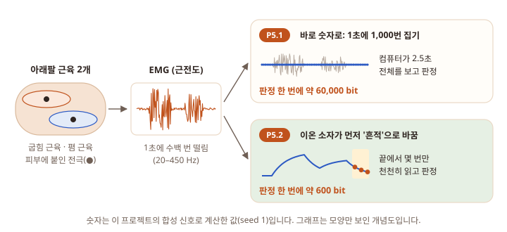
무엇을 하나 VS Code에서 짧은 실습 코드 5개를 하나씩 붙여 넣고 ▷를 누릅니다. 가짜 근육 신호(EMG)를 만들고(실습 1), 숫자로 바꿔 컴퓨터가 판정하고(2), 소자 모형이 신호를 흔적으로 바꾸는 모습을 보고(3), 끝 0.3초만 읽어 맞혀 보고(4), 보내는 숫자의 양을 비교합니다(5). 장비·소자는 필요 없습니다.
이 프로젝트를 끝내면 얻는 것 (1) 모형마다 맞힌 비율을 비교한 막대그래프 한 장. (2) "판정 한 번에 센서 밖으로 보내는 bit"를 비교한 그래프 한 장(약 60,000 bit 대 약 600 bit). 그리고 τ·sampling rate·읽는 횟수를 바꿔 가며 결과가 어떻게 달라지는지 직접 본 경험.
왜 하나 이온 소자 논문은 "센서가 직접 계산하면(in-sensor computing) 보낼 데이터가 줄어든다"고 자주 말합니다. 이 말을 숫자로 직접 확인하고, 어디까지가 사실이고 어디부터가 가정인지 가려 봅니다. P1에서 심장 신호(ECG)로 한 질문을 근육 신호로 이어 갑니다.
- 준비VS Code · mylabs 폴더
- →
- P5.1 EMG를 숫자로실습 1–2 · 학습 약 40분
- →
- P5.2 소자가 먼저 흔적으로실습 3–5 · 학습 약 60분
- →
- 끝맨 아래 [완료] 단추
실습 5개를 모두 ▷ 실행하고 결과 그림을 확인하면 끝입니다. "관찰 적기" 질문은 머릿속으로 답해 보고 '정답 보기'로 확인하면 충분하고, 글로 적는 것은 선택입니다. 결과가 예상과 달라도 괜찮습니다.
준비: VS Code와 mylabs 폴더
P1을 해 봤다면 준비는 끝나 있습니다. 처음이라면 처음 한 번: 내 컴퓨터 준비하기를 먼저 끝냅니다. 그 페이지 끝에서 p0_hello.py를 ▷ 실행해 사인 곡선이 떴다면 준비가 된 것입니다. P1의 sampling rate·R–C·balanced accuracy를 먼저 해 두면 이 페이지가 훨씬 쉽습니다(필수는 아님).
모든 실습은 같은 순서입니다. mylabs 폴더에 새 파일(실습마다 적힌 이름) → 코드 상자의 복사 아이콘 → Ctrl+V → Ctrl+S → 오른쪽 위 ▷. 자세한 그림은 첫 실습: 코드 붙여 넣고 ▷ Run에 있습니다. 결과 글자는 아래 TERMINAL에, 그래프는 따로 뜨는 그림 창에 나옵니다. 그림 창을 닫아야 프로그램이 끝납니다.
P5.1. EMG는 무엇이고, 숫자로 바꾸면 얼마나 많을까
손목을 안쪽으로 굽혀 보세요. 아래팔 안쪽 근육이 단단해집니다. 이번엔 손등 쪽으로 펴 보세요. 바깥쪽 근육이 단단해집니다. 근육은 힘을 줄 때 아주 작은 전기를 냅니다. 피부에 붙인 전극으로 잰 이 신호가 EMG입니다.
EMG (electromyography, 근전도): 근육이 힘을 줄 때 피부 위에서 잰 전기 신호. 크기는 보통 1 mV 안팎으로, 건전지(1,500 mV)의 1,000분의 1쯤입니다.
flexor · extensor: 손목을 굽히는 근육(flexor)과 펴는 근육(extensor). 이 프로젝트의 channel 두 개입니다. channel = 전극 한 쌍이 재는 신호 한 줄.
심장 신호(ECG)와 무엇이 다른가. 심장은 북 하나를 "둥, 둥" 치는 사람과 같아서 또렷한 봉우리가 일정하게 나옵니다. 근육은 수천 개의 가는 섬유가 제각각 전기를 내서, 관중 수천 명의 함성처럼 1초에 수백 번 +와 −로 들쭉날쭉 떨립니다. 함성 한 마디에는 뜻이 없지만 함성이 얼마나 큰지는 경기 상황을 알려 줍니다. EMG도 떨림 하나하나보다 떨림의 크기가 "얼마나 세게 힘을 주나"를 알려 줍니다.
envelope: 빠른 떨림의 크기를 이은 느린 곡선. "지금 얼마나 시끄러운가"의 곡선입니다. 힘을 주면 올라가고 쉬면 내려갑니다.
RMS (root mean square): 떨림의 평균 크기를 재는 방법. 값마다 제곱해서(음수도 +가 됨) 평균을 낸 뒤 제곱근을 씌웁니다. 예: +1, −1, +1, −1의 그냥 평균은 0이지만 RMS는 1입니다. 이 페이지에서 "세기"는 RMS입니다.
과제: 근육이 다 쉰 뒤에, 어느 순서로 움직였는지 맞히기
손목 동작 순서로 명령을 보내는 장치를 생각해 봅니다. 굽혔다가 펴면 "다음 곡", 폈다가 굽히면 "이전 곡". 장치는 동작이 다 끝나고 근육이 쉬고 있을 때 판정합니다.
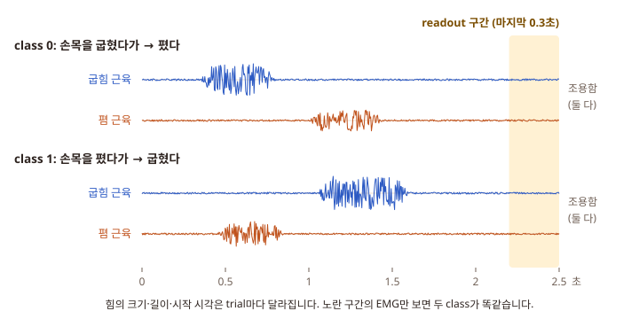
trial: 시험 문제 한 개. 2.5초 동안 손목을 두 번 움직인 기록 하나. 코드는 trial 200개를 만듭니다.
class: 정답의 종류. class 0 = 굽힘 → 폄, class 1 = 폄 → 굽힘. 힘의 세기(0.3–1.0 mV)·길이(0.3–0.6초)·시작 시각은 trial마다 무작위라서 "첫 번째가 더 세다" 같은 꼼수로는 못 맞힙니다.
readout 구간: 답을 내려고 값을 읽는 시간. 여기서는 마지막 0.3초(2.2–2.5초).
P5.1은 가장 흔한 방법부터 봅니다. EMG를 그대로 숫자로 바꿔 컴퓨터에 보내고, 컴퓨터가 2.5초 전체를 보고 판정합니다.
| 실습 | 하는 일 | 결과로 보는 것 |
|---|---|---|
| 1 | 가짜 EMG 만들기 | 두 class의 모양, 끝 0.3초는 똑같이 조용하다 |
| 2 | sampling rate: 1초에 몇 번 집나 | 7가지 sampling rate에서 맞힌 비율 |
실습 1. 가짜 EMG 만들기 (p5_1_emg.py)
진짜 사람 기록 대신 수식으로 만든 가짜 EMG 200개를 만듭니다. 가짜를 쓰면 정답(class)을 우리가 정확히 알아서 채점할 수 있습니다.
이 실습에서 볼 것은 두 가지입니다. EMG가 빠른 떨림 × 느린 envelope으로 생겼다는 것, 그리고 끝 0.3초에는 두 class의 EMG가 똑같이 조용하다는 것. 그래서 끝만 보는 방법으로는 이 문제를 못 풉니다.
crosstalk: 옆 근육의 전기가 전극으로 조금 새어 들어오는 것. 코드는 15 %를 섞습니다.
할 일 mylabs에 새 파일 p5_1_emg.py → 아래 코드 붙여 넣기 → Ctrl+S → ▷.
mylabs/p5_1_emg.py
# ============================================================
# P5 실습 1 · 가짜 근육 신호(synthetic EMG) 만들고 보기
#
# 전체 과정:
#
# trial 200개 정하기 (class 0 = 굽힘 → 폄, class 1 = 폄 → 굽힘)
# ↓
# trial마다 '힘을 주는 모양'(envelope) 두 개를 그리기
# (세기 0.3–1.0 mV, 길이 0.3–0.6초, 시작 시각은 매번 무작위)
# ↓
# envelope × 빠른 떨림(20–450 Hz) = EMG
# + 옆 근육으로 새는 신호(crosstalk) + 작은 센서 잡음
# ↓
# 표: 앞쪽 · 뒤쪽 · 끝 0.3초에서 채널마다 세기(RMS)
# 그래프: class 0과 class 1의 trial 하나씩
#
# 이 신호는 진짜 사람 기록이 아니라 수식으로 만든 것입니다.
# 그래서 정답(class)을 우리가 정확히 압니다.
# ============================================================
import numpy as np
import matplotlib.pyplot as plt
# ============================================================
# 0. 그림 설정 (한글 글꼴 · 글씨 크기) — 건드리지 않아도 됩니다
# ============================================================
plt.rcParams.update({
"font.family": "Malgun Gothic", "axes.unicode_minus": False, "font.size": 11,
"legend.frameon": False, "axes.spines.top": False, "axes.spines.right": False,
})
# ============================================================
# 1. 바꿔 볼 수 있는 설정값 ← 여기를 바꿔 보세요
# ============================================================
CROSSTALK = 0.15 # 옆 근육의 신호가 몇 배로 새어 드나 (0 = 전혀 안 샘, 0.15 = 15 %)
SENSOR_NOISE = 0.005 # 센서 잡음의 크기 (mV)
N_TRIALS = 200 # 시험 문제(trial) 수 (짝수)
SEED = 1 # 무작위 '씨앗'. 같은 SEED면 언제 돌려도 같은 신호
# 가짜 EMG를 만드는 촘촘함과 길이 (바꾸지 않습니다)
FS_MAKE = 2000 # 1초에 2000점 = 0.5 ms마다 점 하나
T = 2.5 # trial 하나의 길이 (초)
N = int(FS_MAKE * T) # 점 5000개
END = 2.2 # 끝 0.3초(2.2–2.5초) = readout 구간. 여기서는 두 근육 모두 쉰다
# ============================================================
# 2. 도구 두 개: filter와 '힘 주는 구간' 모양
# ============================================================
def band(x, lo, hi):
"""lo–hi Hz 사이의 떨림만 남기고 나머지는 모두 지운다 (이상적인 filter).
신호를 '몇 Hz 떨림이 얼마나 들어 있나'로 바꾼 뒤(FFT), 범위 밖을 0으로 만들고 되돌린다."""
F = np.fft.rfft(x, axis=-1)
f = np.fft.rfftfreq(x.shape[-1], 1 / FS_MAKE)
F[..., (f < lo) | (f > hi)] = 0
return np.fft.irfft(F, x.shape[-1], axis=-1)
def burst(t, start, dur, ramp=0.05):
"""힘을 주는 구간 하나: 0.05초에 걸쳐 오르고 → 유지 → 0.05초에 걸쳐 내린다 (높이 1)."""
w = np.minimum(np.clip((t - start) / ramp, 0, 1), np.clip((start + dur - t) / ramp, 0, 1))
return 0.5 - 0.5 * np.cos(np.pi * w)
# ============================================================
# 3. trial 만들기
# ============================================================
rng = np.random.default_rng(SEED)
y = np.arange(N_TRIALS) % 2 # 정답 class: 0, 1, 0, 1, … (반반)
rng.shuffle(y) # 순서를 섞는다
t = np.arange(N) / FS_MAKE # 시간 축 (초)
# 첫 번째 힘: 0.2–0.5초에 시작, 0.3–0.6초 동안
s1 = rng.uniform(0.2, 0.5, (N_TRIALS, 1))
d1 = rng.uniform(0.3, 0.6, (N_TRIALS, 1))
# 두 번째 힘: 0.1–0.3초 쉬었다가 시작, 0.3–0.6초 동안
gap = rng.uniform(0.1, 0.3, (N_TRIALS, 1))
d2 = rng.uniform(0.3, 0.6, (N_TRIALS, 1))
s2 = s1 + d1 + gap
# 힘의 세기: 0.3–1.0 mV (세 배까지 다름)
a1 = rng.uniform(0.3, 1.0, (N_TRIALS, 1))
a2 = rng.uniform(0.3, 1.0, (N_TRIALS, 1))
first = a1 * burst(t, s1, d1)
second = a2 * burst(t, s2, d2)
# class 0이면 굽힘 근육(flexor)이 첫 번째 힘, 폄 근육(extensor)이 두 번째 힘. class 1은 반대.
flex = np.where(y[:, None] == 0, first, second)
ext = np.where(y[:, None] == 0, second, first)
# envelope = 떨림의 크기 곡선. 옆 근육 신호가 CROSSTALK만큼 섞이고, 쉬는 근육도 0.02 mV쯤 활동
env = np.stack([flex + CROSSTALK * ext, ext + CROSSTALK * flex], axis=1) + 0.02 # (trial, 채널 2, 점 5000)
# 빠른 떨림: 무작위 수를 20–450 Hz만 남기고 크기 1로 맞춤
shake = band(rng.normal(size=(N_TRIALS, 2, N)), 20, 450)
shake = shake / shake.std(axis=-1, keepdims=True)
# EMG = envelope × 떨림 → 센서 모듈의 filter(20–450 Hz) → 센서 잡음 더하기
emg = band(env * shake, 20, 450)
emg = emg + rng.normal(0, SENSOR_NOISE, emg.shape)
# ============================================================
# 4. 숫자로 확인: 구간마다 세기(RMS)
# ============================================================
#
# RMS = 값마다 제곱 → 평균 → 제곱근. +와 −로 떨리는 신호의 '평균 크기'.
# class마다 평균을 내서, 앞쪽(0–1.1초) · 뒤쪽(1.1–2.2초) · 끝(2.2–2.5초)을 비교한다.
# ============================================================
def rms(x):
return np.sqrt((x ** 2).mean(-1))
parts = [("early 0-1.1 s", 0.0, 1.1), ("late 1.1-2.2 s", 1.1, END), ("end 2.2-2.5 s", END, T)]
print("=" * 58)
print("synthetic EMG")
print("=" * 58)
print(f"trials : {N_TRIALS} (class 0: {(y == 0).sum()}, class 1: {(y == 1).sum()})")
print(f"one trial : {T} s x 2 channels, {N} points each ({FS_MAKE} per second)")
print(f"crosstalk : {CROSSTALK:.0%}")
print()
print(f"{'mean RMS (mV)':<25}flexor extensor")
for c in (0, 1):
for name, lo, hi in parts:
k = (t >= lo) & (t < hi)
r = rms(emg[y == c][:, :, k]).mean(0)
print(f"class {c} {name:<14} {r[0]:.3f} {r[1]:.3f}")
print()
print("→ 끝 2.2-2.5 s 줄은 두 class가 거의 같다. 끝만 보면 순서를 알 수 없다.")
# ============================================================
# 5. 그래프: class 0과 class 1의 trial 하나씩
# ============================================================
#
# 두 채널이 겹치지 않게 flexor는 +1.6, extensor는 −1.6 위치로 띄워 그린다.
# 진한 선 = envelope (떨림의 평균 크기). 떨림 하나하나는 이보다 2–3배 높이 튀기도 한다.
# ============================================================
fig, axs = plt.subplots(2, 1, figsize=(8, 5.6), sharex=True, sharey=True)
titles = ("(a) class 0: 굽힘(flexor) → 폄(extensor)", "(b) class 1: 폄(extensor) → 굽힘(flexor)")
for ax, c, title in zip(axs, (0, 1), titles):
i = int(np.where(y == c)[0][0]) # 그 class의 첫 trial
ax.axvspan(END, T, color="#fff3c4", zorder=0) # 노란 띠 = readout 구간
ax.plot(t, emg[i, 0] + 1.6, color="#2b59c3", lw=0.5)
ax.plot(t, emg[i, 1] - 1.6, color="#c0521c", lw=0.5)
ax.plot(t, env[i, 0] + 1.6, color="#1a2f6b", lw=1.4) # envelope
ax.plot(t, env[i, 1] - 1.6, color="#7a2e0e", lw=1.4)
ax.set_yticks([1.6, -1.6], ["flexor", "extensor"])
ax.set_ylim(-3.6, 3.9)
ax.set_title(title, loc="left")
axs[0].text(END + (T - END) / 2, 3.75, "readout 구간", ha="center", va="top", color="#7a5a00", fontsize=10)
axs[1].set_xlabel("time (s)")
axs[1].set_xlim(0, T)
fig.text(0.01, 0.55, "EMG (mV, 두 채널을 위아래로 띄움)", rotation=90, va="center", ha="left")
fig.tight_layout(rect=(0.03, 0.07, 1, 1))
# 범례는 그래프 아래 한 줄에
fig.legend(handles=[plt.Line2D([], [], color="0.55", lw=0.8, label="EMG (빠른 떨림)"),
plt.Line2D([], [], color="0.15", lw=1.6, label="envelope (떨림의 평균 크기)")],
loc="lower center", ncol=2)
plt.show() # 그림 창이 뜹니다. 창을 닫으면 프로그램이 끝납니다.코드에서 볼 곳.
- 3번 상자 위쪽: 힘을 주는 구간 두 개의 시작(
s1)·길이(d1,d2)·세기(a1,a2)를 trial마다 무작위로 정합니다. flex = np.where(y == 0, first, second): 정답y가 0이면 굽힘 근육이 첫 번째 힘, 1이면 두 번째 힘을 맡습니다. 이 한 줄이 과제의 전부입니다.emg = band(env * shake, 20, 450): EMG = envelope(크기) × 빠른 떨림(20–450 Hz).band는 정해진 범위의 떨림만 남기는 filter입니다.- 4번 상자: class마다, 앞쪽·뒤쪽·끝 구간마다 세기(RMS)를 평균해 찍습니다.
▷ 실행하면:
PS C:\Users\내이름\Desktop\ion-projects-code> & python mylabs/p5_1_emg.py
==========================================================
synthetic EMG
==========================================================
trials : 200 (class 0: 100, class 1: 100)
one trial : 2.5 s x 2 channels, 5000 points each (2000 per second)
crosstalk : 15%
mean RMS (mV) flexor extensor
class 0 early 0-1.1 s 0.399 0.193
class 0 late 1.1-2.2 s 0.063 0.333
class 0 end 2.2-2.5 s 0.021 0.021
class 1 early 0-1.1 s 0.198 0.419
class 1 late 1.1-2.2 s 0.338 0.063
class 1 end 2.2-2.5 s 0.021 0.022
→ 끝 2.2-2.5 s 줄은 두 class가 거의 같다. 끝만 보면 순서를 알 수 없다.
PS C:\Users\내이름\Desktop\ion-projects-code>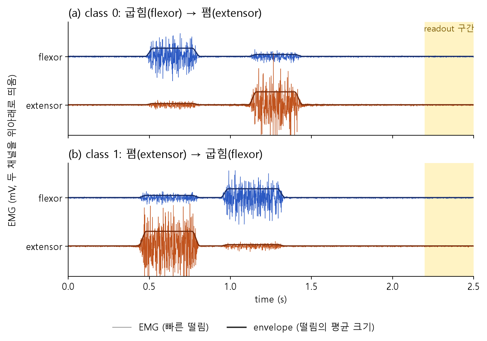
결과가 뜻하는 것. class 0은 앞쪽에서 flexor가(0.399 mV), 뒤쪽에서 extensor가(0.333 mV) 셉니다. class 1은 반대입니다. 그런데 끝 2.2–2.5초 줄은 두 class 모두 0.021–0.022 mV로 같습니다. 끝 구간의 EMG만 봐서는 순서를 알 수 없습니다. 풀려면 앞에서 무슨 일이 있었는지를 누군가 기억해야 합니다.
CROSSTALK = 0.15를 0.5로 바꾸고 Ctrl+S → ▷. 표의 어느 숫자가 바뀌고 어느 숫자가 그대로일까요?
옆 근육 신호가 많이 섞여 "쉬는 쪽" 채널의 세기가 커집니다(class 0 앞쪽 extensor 0.193 → 0.288). 두 채널의 차이가 줄어 덜 또렷해집니다. 그래도 끝 2.2–2.5초 줄은 그대로 0.021–0.022입니다. 끝에는 두 근육 모두 쉬고 있으니 새어 들어올 것도 없습니다. 다시 0.15로 돌려놓습니다.
실습 2. sampling rate: EMG를 1초에 몇 번 집어야 하나 (p5_2_sampling.py)
P1에서 본 sampling rate를 EMG에 씁니다. EMG는 1초에 20–450번 떨리는 성분으로 되어 있어서, 떨림 모양을 숫자에 남기려면 1초에 900번 이상, 보통 1,000 Hz로 집습니다. 그러면 보내는 숫자가 아주 많아집니다.
이 실습은 sampling rate를 7가지(2000–20 Hz)로 바꿔 가며, 컴퓨터가 2.5초 전체의 세기를 보고 순서를 맞히는지 채점합니다. 질문은 "모양을 남기려면 얼마나?"와 "이 과제를 풀려면 얼마나?"가 같은가입니다.
data rate (bit/s): 1초에 만드는 0과 1의 개수 = 채널 수 × sampling rate × bit. bit는 12로 고정. 2채널 × 1,000 Hz × 12 bit = 24,000 bit/s. P1 심장 신호(400 bit/s)의 60배입니다.
ADC (analog-to-digital converter): 전압을 숫자로 바꾸는 부품. sampling rate와 bit가 ADC의 설정입니다.
aliasing · anti-aliasing filter: 너무 드물게 집으면 빠른 떨림이 느린 떨림처럼 둔갑해 숫자에 섞입니다(aliasing). 영상에서 빨리 도는 바퀴가 거꾸로 천천히 도는 것처럼 보이는 것과 같습니다. 그래서 ADC 앞에서 "sampling rate의 절반보다 빠른 떨림"을 미리 지웁니다(anti-aliasing filter). 50 Hz로 집으면 25 Hz보다 빠른 떨림을 지웁니다. EMG는 대부분 20–450 Hz에 있으니 거의 다 지워집니다.
balanced accuracy · cross-validation · label shuffle: P1 실습 7과 같은 채점입니다. class 0과 class 1을 따로 채점해 평균한 맞힌 비율(찍으면 0.50), 연습 묶음 4개·시험 묶음 1개를 다섯 번 바꿔 가며 시험, 정답지를 일부러 섞어 0.50 근처가 나오는지 보는 점검. +/-는 다섯 번 시험 점수가 서로 얼마나 달랐는지입니다.
할 일 mylabs에 새 파일 p5_2_sampling.py → 붙여 넣기 → Ctrl+S → ▷. 몇 초 걸립니다.
mylabs/p5_2_sampling.py
# ============================================================
# P5 실습 2 · sampling rate: EMG를 1초에 몇 번 집어야 하나
#
# 전체 과정:
#
# 실습 1과 같은 가짜 EMG (trial 200개, 1초에 2000점)
# ↓
# anti-aliasing filter: sampling rate의 절반보다 빠른 떨림을 지운다
# ↓
# 일정 간격으로 값 집기 (FS Hz)
# ↓
# 컴퓨터가 2.5초를 0.25초 칸 10개로 나눠 칸마다 · 채널마다 세기(RMS) = 숫자 20개
# ↓
# 이 숫자 20개로 class 맞히기 (readout, 5-fold cross-validation)
# ↓
# 표: sampling rate마다 data rate · 남은 EMG 비율 · 맞힌 비율
# 그래프: (a) 같은 0.1초를 FS Hz로 집은 모습 (b) sampling rate와 맞힌 비율
#
# 맨 위의 FS를 바꿔 (a) 그림이 어떻게 변하는지 보는 것이 이 실습의 핵심입니다.
# ============================================================
import numpy as np
import matplotlib.pyplot as plt
# ============================================================
# 0. 그림 설정 — 건드리지 않아도 됩니다
# ============================================================
plt.rcParams.update({
"font.family": "Malgun Gothic", "axes.unicode_minus": False, "font.size": 11,
"legend.frameon": False, "axes.spines.top": False, "axes.spines.right": False,
})
# ============================================================
# 1. 바꿔 볼 수 있는 설정값 ← 여기를 바꿔 보세요
# ============================================================
FS = 50 # (a) 그림에서 볼 sampling rate (Hz). 2000을 나누어떨어지게 하는 수: 1000, 500, 200, 100, 50, 40, 25, 20 …
FS_LIST = [2000, 1000, 500, 200, 100, 50, 20] # 표와 (b) 그림에서 비교할 sampling rate 목록
BITS = 12 # 숫자 하나를 몇 bit로 적나 (data rate 계산에만 씀)
N_TRIALS = 200
SEED = 1
# ============================================================
# 2. 가짜 EMG 만들기 (실습 1과 같은 코드를 함수 하나로 묶음)
# ============================================================
FS_MAKE, T, END = 2000, 2.5, 2.2
N = int(FS_MAKE * T)
def band(x, lo, hi):
"""lo–hi Hz 사이의 떨림만 남기는 이상적인 filter."""
F = np.fft.rfft(x, axis=-1)
f = np.fft.rfftfreq(x.shape[-1], 1 / FS_MAKE)
F[..., (f < lo) | (f > hi)] = 0
return np.fft.irfft(F, x.shape[-1], axis=-1)
def burst(t, start, dur, ramp=0.05):
w = np.minimum(np.clip((t - start) / ramp, 0, 1), np.clip((start + dur - t) / ramp, 0, 1))
return 0.5 - 0.5 * np.cos(np.pi * w)
def make_emg(n, seed, crosstalk=0.15, sensor_noise=0.005):
"""가짜 EMG (trial, 채널 2, 점 5000) mV · 정답 class · envelope."""
rng = np.random.default_rng(seed)
y = np.arange(n) % 2
rng.shuffle(y)
t = np.arange(N) / FS_MAKE
s1, d1, gap, d2 = (rng.uniform(lo, hi, (n, 1)) for lo, hi in ((0.2, 0.5), (0.3, 0.6), (0.1, 0.3), (0.3, 0.6)))
a1, a2 = rng.uniform(0.3, 1.0, (n, 1)), rng.uniform(0.3, 1.0, (n, 1))
first, second = a1 * burst(t, s1, d1), a2 * burst(t, s1 + d1 + gap, d2)
flex = np.where(y[:, None] == 0, first, second)
ext = np.where(y[:, None] == 0, second, first)
env = np.stack([flex + crosstalk * ext, ext + crosstalk * flex], axis=1) + 0.02
shake = band(rng.normal(size=(n, 2, N)), 20, 450)
shake = shake / shake.std(axis=-1, keepdims=True)
emg = band(env * shake, 20, 450) + rng.normal(0, sensor_noise, (n, 2, N))
return emg, y, env
emg, y, env = make_emg(N_TRIALS, SEED)
t = np.arange(N) / FS_MAKE
# ============================================================
# 3. 숫자로 바꾸기 (ADC 흉내)
# ============================================================
#
# ① anti-aliasing filter: fs의 절반보다 빠른 떨림을 지운다
# (지우지 않으면 빠른 떨림이 느린 떨림처럼 둔갑해 섞인다 = aliasing)
# ② 2000 ÷ fs 칸마다 하나씩만 남긴다 = fs Hz로 집기
# ③ 0.25초 칸 10개 × 채널 2개 = 세기(RMS) 숫자 20개 (컴퓨터가 계산)
# ============================================================
def digitize(emg, fs):
"""raw EMG를 fs Hz로 집은 값, 남은 EMG 비율, 세기 숫자 20개를 돌려준다."""
x = band(emg, 0, fs / 2) if fs < FS_MAKE else emg # ①
kept = float((x ** 2).mean() / (emg ** 2).mean()) # filter 뒤에 남은 EMG power 비율
step = FS_MAKE // fs
xs = x[..., step - 1::step] # ②
rms = [np.sqrt((w ** 2).mean(-1)) for w in np.array_split(xs, 10, axis=-1)] # ③
return x, kept, np.stack(rms, -1).reshape(len(xs), -1)
# ============================================================
# 4. readout과 채점 (P1 실습 7과 같은 방법)
# ============================================================
#
# readout = "숫자 20개에 무게를 곱해 더한 값이 0보다 크면 class 1"
# 무게는 연습 문제로 정한다 (ridge). 5-fold cross-validation으로 시험.
# balanced accuracy = class 0 문제와 class 1 문제를 따로 채점해서 평균. 찍으면 0.50.
# ============================================================
def cross_validate(F, y, seed, folds=5, lam=1.0):
rng = np.random.default_rng(seed)
i0, i1 = rng.permutation(np.where(y == 0)[0]), rng.permutation(np.where(y == 1)[0])
parts = [np.concatenate([i0[f::folds], i1[f::folds]]) for f in range(folds)]
scores = []
for f in range(folds):
test = parts[f]
train = np.concatenate([parts[g] for g in range(folds) if g != f])
mu, sd = F[train].mean(0), F[train].std(0) + 1e-12 # 연습 문제 기준으로 크기 맞춤
A = np.hstack([(F[train] - mu) / sd, np.ones((len(train), 1))])
w = np.linalg.solve(A.T @ A + lam * np.eye(A.shape[1]), A.T @ (2.0 * y[train] - 1))
B = np.hstack([(F[test] - mu) / sd, np.ones((len(test), 1))])
pred = (B @ w > 0).astype(int)
scores.append(np.mean([np.mean(pred[y[test] == c] == c) for c in (0, 1)]))
return np.mean(scores), np.std(scores)
# ============================================================
# 5. sampling rate마다 채점
# ============================================================
for fs in FS_LIST + [FS]:
if FS_MAKE % fs:
raise SystemExit(f"{fs} Hz: 2000을 나누어떨어지게 하는 수만 됩니다 (1000, 500, 200, 100, 50, 40, 25, 20 …)")
rng = np.random.default_rng(SEED + 7) # label shuffle용
rows = []
for fs in FS_LIST:
_, kept, F = digitize(emg, fs)
acc, sd = cross_validate(F, y, SEED)
# label shuffle: 정답지를 섞고 똑같이 → 0.50 근처가 정상 (20번 평균)
shuffled = np.mean([cross_validate(F, rng.permutation(y), SEED)[0] for _ in range(20)])
rows.append((fs, 2 * fs * BITS, kept, acc, sd, shuffled))
print("=" * 66)
print(f"digital: sample raw EMG (2 channels, {BITS} bit), strength over all 2.5 s")
print("=" * 66)
print("sampling rate data rate EMG power balanced label")
print(" (Hz) (bit/s) kept (%) accuracy +/- shuffle")
print("------------- --------- --------- -------- ---- -------")
for fs, bps, kept, acc, sd, sh in rows:
print(f" {fs:>4} {bps:>6} {100 * kept:>5.1f} {acc:.2f} {sd:.2f} {sh:.2f}")
# ============================================================
# 6. 그래프 (a): 첫 힘 구간 안의 0.1초를 FS Hz로 집은 모습
# ============================================================
i = int(np.where(y == 0)[0][0]) # class 0의 첫 trial
k0 = int(np.argmax(env[i, 0] > 0.9 * env[i, 0].max())) # 굽힘 근육이 힘을 주는 구간 안
seg = slice(k0, k0 + int(0.1 * FS_MAKE))
x_fs, _, _ = digitize(emg[i:i + 1], FS) # 이 trial 하나만 FS Hz로
kk = np.arange(seg.start, seg.stop)
kk = kk[(kk + 1) % (FS_MAKE // FS) == 0] # FS Hz로 집는 순간들
fig = plt.figure(figsize=(8, 6.6))
gs = fig.add_gridspec(2, 1, height_ratios=[1, 1.1], hspace=0.62)
ax = fig.add_subplot(gs[0])
ms_ = (t[seg] - t[k0]) * 1000
ax.plot(ms_, emg[i, 0, seg], color="0.75", lw=1.2, label="원래 EMG (2000 Hz)")
if FS < FS_MAKE:
ax.plot(ms_, x_fs[0, 0, seg], color="#e6a57e", lw=1.2, label=f"filter 뒤 ({FS / 2:g} Hz보다 빠른 떨림 지움)")
ax.plot((t[kk] - t[k0]) * 1000, x_fs[0, 0, kk], "o", color="#c0521c", ms=6 if FS <= 200 else 3,
label=f"{FS} Hz로 집은 값")
ax.set_xlabel("time (ms, 첫 힘 구간 안의 0.1초)")
ax.set_ylabel("flexor EMG (mV)")
ax.set_title(f"(a) {FS} Hz = {1000 / FS:g} ms마다 한 번 집기", loc="left", pad=28)
ax.legend(loc="lower left", bbox_to_anchor=(0.0, 1.0), ncol=3, borderaxespad=0.2, fontsize=9.5)
# ============================================================
# 7. 그래프 (b): sampling rate와 맞힌 비율
# ============================================================
ax = fig.add_subplot(gs[1])
fsx = [r[0] for r in rows]
ax.axhline(0.5, color="0.6", ls=":", lw=1.3)
ax.errorbar(fsx, [r[3] for r in rows], yerr=[r[4] for r in rows], fmt="o-", color="#2b59c3", lw=2, ms=6, capsize=3)
if FS in fsx: # 지금 FS를 주황 동그라미로 표시
r = rows[fsx.index(FS)]
ax.plot(FS, r[3], "o", ms=13, mfc="none", mec="#c0521c", mew=2)
ax.set_xscale("log")
ax.set_xticks(fsx, [str(f) for f in fsx])
ax.minorticks_off()
ax.set_ylim(0.35, 1.08)
ax.set_xlabel("sampling rate (Hz, 1초에 몇 번 집나, 로그 눈금)")
ax.set_ylabel("balanced accuracy")
ax.set_title("(b) 2.5초 전체를 숫자로 보고 컴퓨터가 판정했을 때", loc="left", pad=8)
ax.text(max(fsx), 0.47, "chance 0.50", color="0.45", fontsize=9.5, va="top", ha="right")
plt.show()코드에서 볼 곳.
- 2번 상자
make_emg: 실습 1의 코드를 함수 하나로 묶은 것입니다. 같은 SEED면 같은 신호가 나옵니다. - 3번 상자
digitize: ① filter로 fs의 절반보다 빠른 떨림을 지우고, ②2000 ÷ fs칸마다 하나씩만 남기고(fs Hz로 집기), ③ 2.5초를 0.25초 칸 10개로 나눠 칸마다·채널마다 세기를 잽니다. 숫자 20개가 나옵니다. - 4번 상자
cross_validate: 숫자 20개에 무게를 곱해 더한 값으로 class를 정하고 채점합니다. P1 실습 7과 같은 코드입니다. kept: filter를 지나고 남은 EMG의 양(원래 = 100 %).
▷ 실행하면:
PS C:\Users\내이름\Desktop\ion-projects-code> & python mylabs/p5_2_sampling.py
==================================================================
digital: sample raw EMG (2 channels, 12 bit), strength over all 2.5 s
==================================================================
sampling rate data rate EMG power balanced label
(Hz) (bit/s) kept (%) accuracy +/- shuffle
------------- --------- --------- -------- ---- -------
2000 48000 100.0 1.00 0.00 0.52
1000 24000 100.0 0.99 0.01 0.49
500 12000 53.7 1.00 0.00 0.50
200 4800 18.9 0.99 0.01 0.51
100 2400 7.1 1.00 0.00 0.51
50 1200 1.1 1.00 0.00 0.51
20 480 0.0 0.49 0.04 0.50
PS C:\Users\내이름\Desktop\ion-projects-code>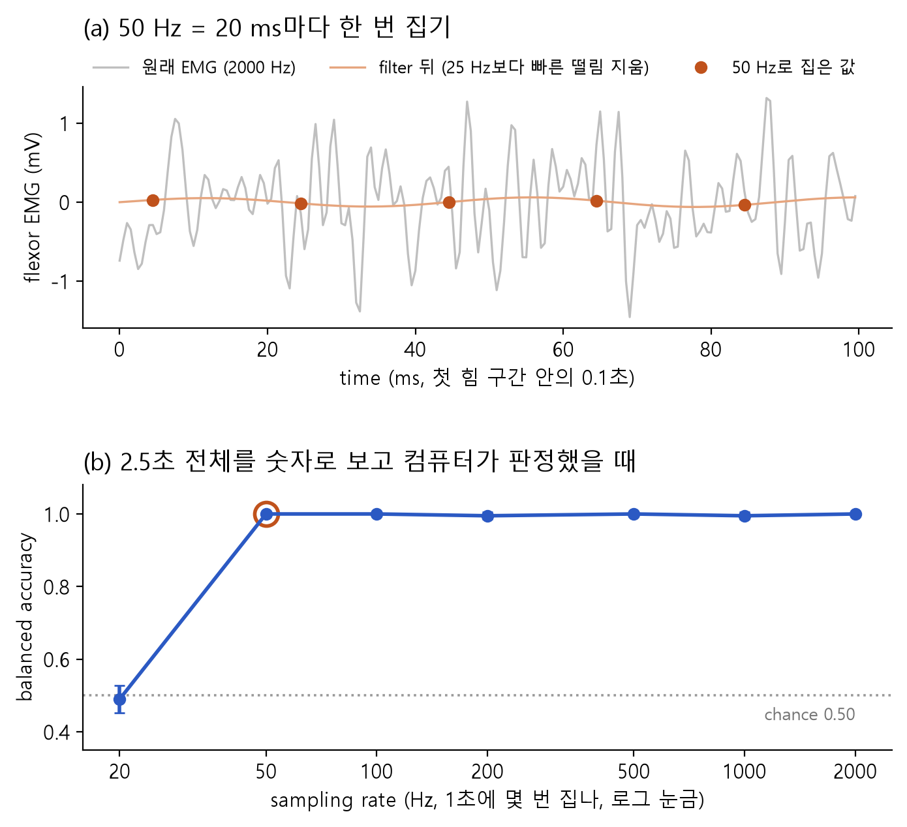
표 읽기. 50 1200 1.1 1.00 0.00 0.51 줄은 이렇게 읽습니다.
| 열 이름 | 뜻 | 이 줄의 값 |
|---|---|---|
| sampling rate (Hz) | 1초에 값을 몇 번 집었나 | 50번 (20 ms마다) |
| data rate (bit/s) | 2채널 × sampling rate × 12 bit | 1,200 |
| EMG power kept (%) | filter를 지나고 남은 EMG의 양 | 1.1 % → 98.9 %가 지워짐 |
| balanced accuracy | 2.5초 전체의 세기 20개로 맞힌 비율 | 1.00 = 다 맞힘 |
| label shuffle | 정답지를 섞고 똑같이 했을 때 (점검) | 0.51 → 0.50 근처라 정상 |
결과가 뜻하는 것. EMG 모양이 100 % 남는 것은 1,000 Hz부터입니다. 그런데 맞힌 비율은 50 Hz(EMG가 1.1 %만 남음)에서도 1.00이고, 20 Hz에서야 찍기(0.49)가 됩니다. 모양을 남기는 데 필요한 것과 이 과제에 필요한 것이 다릅니다.
FS = 50을 FS = 20으로 바꾸고 ▷. (a)의 주황 선과 점이 어떻게 될지 먼저 예상해 보세요.
20 Hz로 집으면 filter가 10 Hz보다 빠른 떨림을 모두 지웁니다. EMG에는 20 Hz보다 느린 떨림이 없으니 남는 것이 없어서 주황 선이 0에 붙은 직선이 됩니다. 표는 그대로이고, (b)의 주황 동그라미가 20 Hz(0.49)로 옮겨 갑니다.
PS C:\Users\내이름\Desktop\ion-projects-code> & python mylabs/p5_2_sampling.py
==================================================================
digital: sample raw EMG (2 channels, 12 bit), strength over all 2.5 s
==================================================================
sampling rate data rate EMG power balanced label
(Hz) (bit/s) kept (%) accuracy +/- shuffle
------------- --------- --------- -------- ---- -------
2000 48000 100.0 1.00 0.00 0.52
1000 24000 100.0 0.99 0.01 0.49
500 12000 53.7 1.00 0.00 0.50
200 4800 18.9 0.99 0.01 0.51
100 2400 7.1 1.00 0.00 0.51
50 1200 1.1 1.00 0.00 0.51
20 480 0.0 0.49 0.04 0.50
PS C:\Users\내이름\Desktop\ion-projects-code>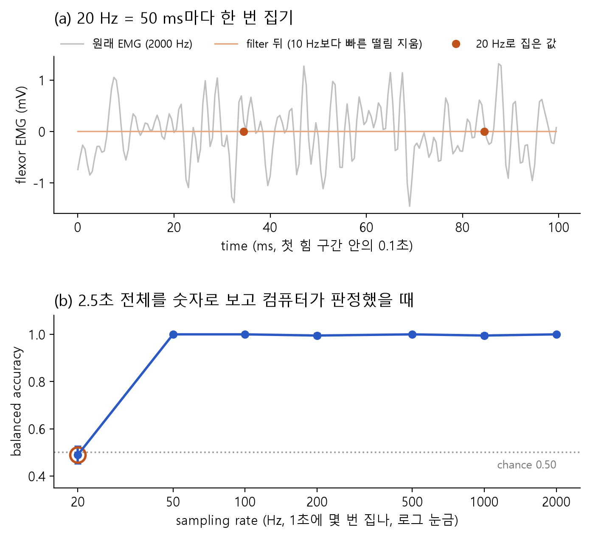
FS_LIST = [50, 40, 25, 20]으로 바꿔 보면 50 Hz는 1.00인데 40 Hz부터 0.42–0.54로 찍기 수준이 됩니다. 40 Hz의 filter는 20 Hz보다 빠른 떨림을 지우는데, EMG가 20 Hz부터 시작하니 0.1 %만 남습니다.
관찰 적기 (완료 조건)
할 일 연구 노트나 메모장에 아래 질문의 답을 먼저 내 말로 적습니다. 다 적은 뒤에 "정답 보기"를 눌러 비교합니다.
질문 1. EMG 모양(떨림)을 숫자에 그대로 남기려면 sampling rate가 최소 얼마여야 하고, 그때 data rate는? ______ Hz, ______ bit/s
1,000 Hz, 24,000 bit/s. 표에서 EMG power kept가 100 %인 가장 낮은 줄입니다. 가장 빠른 떨림(450 Hz)을 남기려면 그 두 배보다 많이 집어야 하기 때문입니다. 500 Hz에서는 250 Hz보다 빠른 떨림이 지워져 53.7 %만 남습니다.
질문 2. 50 Hz에서는 EMG가 1.1 %밖에 안 남는데도 1.00을 맞힙니다. 그런데 20 Hz에서는 0.49로 무너집니다. 왜 그럴까요? 힌트: 이 과제가 알아야 하는 것은 "떨림의 모양"인가, "언제 얼마나 세게"인가?
이 과제는 어느 근육이 먼저 세게 일했나만 알면 됩니다. 떨림 모양은 필요 없고 envelope만 있으면 됩니다. 50 Hz에서도 20–25 Hz의 얇은 띠가 남고, 그 작은 떨림도 힘을 줄 때 커지고 쉴 때 작아집니다. 이 가짜 신호는 잡음이 아주 적어서 1.1 %만 남아도 "어느 칸이 시끄러웠나"를 알 수 있습니다. 20 Hz에서는 남는 것이 0 %라 찍기가 됩니다.
P1의 결론과 같습니다. 무엇을 판정하느냐에 따라 필요한 설정이 다릅니다. 다만 실제 피부 위 EMG에는 전극이 흔들려서 생기는 느린 잡음이 많아서, 1 %만 남기는 방법은 실제로는 위험합니다 가정. 그래서 보통은 1,000 Hz로 다 집은 뒤 컴퓨터가 envelope을 계산합니다.
관찰할 점.
- EMG의 모양을 남기려면 1,000 Hz, 2채널이면 24,000 bit/s가 필요합니다.
- 이 과제에 필요한 것은 envelope(언제 얼마나 세게)뿐이라, 깨끗한 가짜 신호에서는 50 Hz로도 맞힙니다.
- 여기까지는 컴퓨터가 2.5초를 모두 저장하고 판정했습니다. 기억은 컴퓨터가 맡았습니다. 끝 0.3초만 보면 어떻게 될까요? 실습 1에서 본 것처럼 근육이 쉬고 있으니 찍기입니다(실습 4의
no memory줄).
다음 단계 조건. 실습 2까지 ▷ 실행해 결과 그림을 확인했으면 P5.2로 갑니다(질문에 글로 답하기는 선택).
P5.2. 소자가 먼저 흔적으로 바꾸면
P5.1은 "다 숫자로 바꿔 보내고, 기억과 계산은 컴퓨터가"였습니다. P5.2는 반대입니다. 센서 자리의 소자가 EMG를 받아 흔적(state)으로 들고 있고, 컴퓨터는 끝에서 몇 번만 읽습니다. 이온 소자 논문이 말하는 in-sensor computing이 이것입니다.
빗물통으로 생각해 보기. 바닥에 작은 구멍이 난 빗물통이 있습니다. 비가 세게 오면 물이 빨리 차고, 비가 그치면 구멍으로 천천히 빠집니다. 그래서 비가 그친 뒤에도 물 높이를 보면 "조금 전에 비가 얼마나 왔는지" 짐작할 수 있습니다. EMG의 +와 −를 모두 "비"로 바꿔 받는 것이 정류이고, 물 높이가 state입니다.
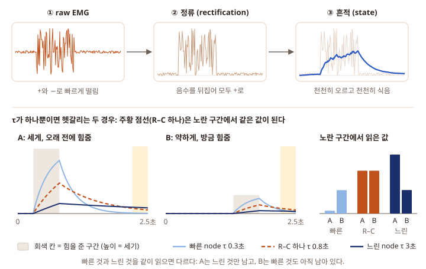
rectification (정류): +와 −로 오가는 신호를 +쪽으로만 바꾸는 것. 빗물통에 물이 들어오기만 하는 것과 같습니다. 한 방향으로만 이온이 잘 흐르는 소자(ionic diode)라면 재료가 이 일을 직접 할 수 있다고 봅니다 가정.
state: 소자가 지금 들고 있는 값(빗물통의 물 높이). 실제 이온 소자라면 전도도나 전류처럼 잴 수 있는 값입니다.
time constant τ: 흔적이 얼마나 오래 남는지(구멍 크기). τ = 0.3초면 금방 비고, τ = 3초면 오래 남습니다. P1의 R–C의 τ와 같습니다.
| 실습 | 하는 일 | 결과로 보는 것 |
|---|---|---|
| 3 | 정류와 R–C 하나 | τ에 따라 끝 0.3초에 흔적이 남는다/안 남는다 (끝 구간 확대 그림) |
| 4 | 모형별로 끝만 읽어 채점 | no memory · R–C · R–C ×4 · reservoir · digital 막대그래프 |
| 5 | 판정 한 번에 보내는 bit 비교 | 60,000 bit 대 576 bit, 그리고 맞힌 비율 |
실습 3. 정류와 R–C 흔적 보기 (p5_3_rc.py)
EMG를 정류(모두 +로)한 뒤 빗물통 하나(R–C)에 넣고, state가 어떻게 오르고 식는지 봅니다. 그리고 끝 0.3초에 두 채널의 흔적이 얼마나 남았는지를 class마다 비교합니다.
나중에 쓴 근육의 흔적이 더 남아 있다면, "extensor 흔적이 더 크면 class 0(굽힘 → 폄)"이라는 간단한 규칙으로도 맞힐 수 있습니다. τ를 바꿔 가며 그 규칙이 언제 통하는지 봅니다.
할 일 mylabs에 새 파일 p5_3_rc.py → 붙여 넣기 → Ctrl+S → ▷. 그림 창이 두 개 뜹니다.
mylabs/p5_3_rc.py
# ============================================================
# P5 실습 3 · 정류와 R–C 흔적: 근육이 쉰 뒤에도 흔적이 남을까
#
# 전체 과정:
#
# 실습 1과 같은 가짜 EMG (trial 200개)
# ↓
# 정류 (rectification): |EMG| = −도 +로 뒤집기 (빗물통에 물이 들어오기만 하게)
# ↓
# R–C 하나 (빗물통 하나): state가 |EMG|를 천천히 따라 오르고, 쉬면 천천히 식는다
# state(다음) = a × state(지금) + (1 − a) × |EMG|, a = e^(−dt/TAU)
# ↓
# 끝 0.3초(2.2–2.5초)의 state 평균을 채널마다 보기
# 간단한 규칙: "extensor state > flexor state 이면 class 0" 으로 몇 개나 맞나?
# ↓
# [그림 1] trial 하나: 정류 확대 · 채널마다 |EMG|와 state
# [그림 2] trial 200개: class마다 (extensor − flexor) state가 끝에서 갈라지나
#
# 맨 위의 TAU를 0.1 → 0.3 → 1 → 3으로 바꿔 Run 해 보세요.
# ============================================================
import numpy as np
import matplotlib.pyplot as plt
# ============================================================
# 0. 그림 설정 — 건드리지 않아도 됩니다
# ============================================================
plt.rcParams.update({
"font.family": "Malgun Gothic", "axes.unicode_minus": False, "font.size": 11,
"legend.frameon": False, "axes.spines.top": False, "axes.spines.right": False,
})
# ============================================================
# 1. 바꿔 볼 수 있는 설정값 ← 여기를 바꿔 보세요
# ============================================================
TAU = 0.3 # time constant τ (초). 흔적이 얼마나 오래 남나 (빗물통 구멍 크기). 0.1, 0.3, 1, 3 …
N_TRIALS = 200
SEED = 1
# ============================================================
# 2. 가짜 EMG 만들기 (실습 1·2와 같은 코드)
# ============================================================
FS_MAKE, T, END = 2000, 2.5, 2.2
N = int(FS_MAKE * T)
def band(x, lo, hi):
F = np.fft.rfft(x, axis=-1)
f = np.fft.rfftfreq(x.shape[-1], 1 / FS_MAKE)
F[..., (f < lo) | (f > hi)] = 0
return np.fft.irfft(F, x.shape[-1], axis=-1)
def burst(t, start, dur, ramp=0.05):
w = np.minimum(np.clip((t - start) / ramp, 0, 1), np.clip((start + dur - t) / ramp, 0, 1))
return 0.5 - 0.5 * np.cos(np.pi * w)
def make_emg(n, seed, crosstalk=0.15, sensor_noise=0.005):
"""가짜 EMG (trial, 채널 2, 점 5000) mV · 정답 class · envelope."""
rng = np.random.default_rng(seed)
y = np.arange(n) % 2
rng.shuffle(y)
t = np.arange(N) / FS_MAKE
s1, d1, gap, d2 = (rng.uniform(lo, hi, (n, 1)) for lo, hi in ((0.2, 0.5), (0.3, 0.6), (0.1, 0.3), (0.3, 0.6)))
a1, a2 = rng.uniform(0.3, 1.0, (n, 1)), rng.uniform(0.3, 1.0, (n, 1))
first, second = a1 * burst(t, s1, d1), a2 * burst(t, s1 + d1 + gap, d2)
flex = np.where(y[:, None] == 0, first, second)
ext = np.where(y[:, None] == 0, second, first)
env = np.stack([flex + crosstalk * ext, ext + crosstalk * flex], axis=1) + 0.02
shake = band(rng.normal(size=(n, 2, N)), 20, 450)
shake = shake / shake.std(axis=-1, keepdims=True)
emg = band(env * shake, 20, 450) + rng.normal(0, sensor_noise, (n, 2, N))
return emg, y, env
emg, y, env = make_emg(N_TRIALS, SEED)
t = np.arange(N) / FS_MAKE
# ============================================================
# 3. 정류 + R–C 하나 (빗물통 하나)
# ============================================================
#
# u = |EMG| ← 정류: +와 −로 떨리는 값을 모두 +로
#
# 0.5 ms(dt)마다:
# state = a × (지난 state) + (1 − a) × u
# a = e^(−dt/TAU) ← TAU가 클수록 a가 1에 가까워 천천히 변함
#
# 계산은 0.5 ms마다 하지만, 기록은 5 ms마다(1초에 200번)만 해 둔다.
# ============================================================
GRID = 200 # state를 기록해 두는 간격: 1초에 200번
u = np.abs(emg) # 정류
dt = 1 / FS_MAKE
a = np.exp(-dt / TAU)
state = np.zeros(u.shape[:2]) # (trial, 채널) 모두 동시에 계산. 처음 state = 0
S = np.zeros(u.shape[:2] + (N // (FS_MAKE // GRID),))
for k in range(N):
state = a * state + (1 - a) * u[:, :, k]
if (k + 1) % (FS_MAKE // GRID) == 0:
S[:, :, (k + 1) // (FS_MAKE // GRID) - 1] = state
tg = np.arange(1, S.shape[-1] + 1) / GRID # 기록한 시각 (초)
# ============================================================
# 4. 숫자로 확인: 끝 0.3초의 state
# ============================================================
end = tg > END
s_end = S[:, :, end].mean(-1) # (trial, 채널): 끝 구간 평균 state
print("=" * 58)
print(f"R-C, tau = {TAU:g} s")
print("=" * 58)
print(f"after 0.5 s of rest, the trace keeps : {np.exp(-0.5 / TAU):.0%}")
print(f"after 1.0 s of rest, the trace keeps : {np.exp(-1.0 / TAU):.0%}")
print()
print("mean state in the readout window (2.2-2.5 s), mV")
print(" flexor extensor extensor - flexor")
for c in (0, 1):
f_, e_ = s_end[y == c].mean(0)
print(f"class {c} {f_:.3f} {e_:.3f} {e_ - f_:+.3f}")
# 간단한 규칙: 나중에 쓴 근육의 흔적이 더 남아 있을 것 → extensor가 더 크면 class 0 (굽힘 → 폄)
guess = (s_end[:, 1] <= s_end[:, 0]).astype(int)
acc = np.mean([np.mean(guess[y == c] == c) for c in (0, 1)])
print()
print(f"simple rule 'extensor > flexor -> class 0' : balanced accuracy {acc:.2f} (chance 0.50)")
# ============================================================
# 5. [그림 1] trial 하나: 정류 확대 · 채널마다 |EMG|와 state
# ============================================================
i = int(np.where(y == 0)[0][0]) # class 0의 첫 trial
k0 = int(np.argmax(env[i, 0] > 0.9 * env[i, 0].max())) # 굽힘 근육이 힘을 주는 구간 안
seg = slice(k0, k0 + int(0.05 * FS_MAKE)) # 0.05초만 확대
fig = plt.figure(figsize=(8, 7.4))
gs = fig.add_gridspec(3, 1, height_ratios=[0.8, 1, 1], hspace=0.75)
ax = fig.add_subplot(gs[0])
ms_ = (t[seg] - t[k0]) * 1000
ax.axhline(0, color="0.8", lw=0.8)
ax.plot(ms_, emg[i, 0, seg], color="0.7", lw=1.2, label="raw EMG (+와 -)")
ax.plot(ms_, u[i, 0, seg], color="#2b59c3", lw=1.4, label="정류 |EMG| (모두 +)")
ax.set_xlabel("time (ms, 0.05초 확대)")
ax.set_ylabel("mV")
ax.set_title("(a) 정류: -쪽 떨림을 +로 뒤집는다", loc="left", pad=26)
ax.legend(loc="lower left", bbox_to_anchor=(0.0, 1.0), ncol=2, borderaxespad=0.2, fontsize=9.5)
for row, c, col, tag in ((1, 0, "#2b59c3", "(b) flexor 채널 (이 trial에서는 먼저 힘을 줌)"),
(2, 1, "#c0521c", "(c) extensor 채널 (나중에 힘을 줌)")):
ax = fig.add_subplot(gs[row])
ax.axvspan(END, T, color="#fff3c4", zorder=0)
ax.plot(t, u[i, c], color="0.82", lw=0.4)
ax.plot(tg, S[i, c], color=col, lw=2.2)
ax.set_ylim(0, 1.3)
ax.set_xlim(0, T)
ax.set_ylabel("mV")
ax.set_title(tag, loc="left", pad=6)
ax.text(T - 0.02, 1.25, f"끝 state {s_end[i, c]:.3f}", ha="right", va="top", fontsize=9.5, color=col)
ax.set_xlabel("time (s) · 연한 회색 = |EMG|, 진한 선 = R–C state, 노란 띠 = readout 구간")
# ============================================================
# 6. [그림 2] trial 200개: (extensor - flexor) state, class마다
# ============================================================
#
# 선 = class의 가운데 값, 옅은 띠 = trial의 가운데 절반(25–75 %)이 들어오는 범위.
# 왼쪽 = 2.5초 전체, 오른쪽 = 끝 0.3초만 크게 (세로 눈금이 다름).
# 끝 구간에서 두 띠가 안 겹칠수록 "끝만 보고도" 순서를 가려낼 수 있다.
# ============================================================
d = S[:, 1] - S[:, 0] # (trial, 시각)
fig2, (ax2, ax3) = plt.subplots(1, 2, figsize=(8, 4.0), gridspec_kw={"width_ratios": [2.6, 1]})
for ax, m in ((ax2, tg > 0), (ax3, end)):
ax.axvspan(END, T, color="#fff3c4", zorder=0)
ax.axhline(0, color="0.6", lw=0.8)
for c, col, name in ((0, "#2b59c3", "class 0 (굽힘 → 폄)"), (1, "#c0521c", "class 1 (폄 → 굽힘)")):
lo, mid, hi = np.percentile(d[y == c][:, m], [25, 50, 75], axis=0)
ax.fill_between(tg[m], lo, hi, color=col, alpha=0.18, lw=0)
ax.plot(tg[m], mid, color=col, lw=2, label=name)
ax2.set_xlim(0, T)
ax3.set_xlim(END, T)
ax3.set_xticks([2.2, 2.35, 2.5])
ax2.set_xlabel("time (s)")
ax3.set_xlabel("time (s)")
ax2.set_ylabel("extensor - flexor state (mV)")
ax2.set_title(f"τ = {TAU:g} s: 2.5초 전체", loc="left")
ax3.set_title("끝 0.3초 확대", loc="left")
fig2.tight_layout(rect=(0, 0.08, 1, 1))
fig2.legend(*ax2.get_legend_handles_labels(), loc="lower center", ncol=2)
plt.show() # 그림 창 두 개가 뜹니다. 둘 다 닫으면 끝납니다.코드에서 볼 곳.
- 3번 상자
u = np.abs(emg): 정류의 전부입니다. 절댓값을 취하면 −0.7은 +0.7이 됩니다. state = a * state + (1 - a) * u[:, :, k]: R–C 한 줄. P1 실습 6과 같은 식이고, 이번에는 0.5 ms마다 계산합니다. τ = 0.3초면 0.5초 쉰 뒤 흔적의 19 %가 남습니다(TERMINAL 둘째 줄).- 4번 상자의 간단한 규칙: 끝 구간에서 extensor state가 flexor state보다 크면 class 0. 학습 없이 정한 규칙입니다.
▷ 실행하면 (TAU = 0.3):
PS C:\Users\내이름\Desktop\ion-projects-code> & python mylabs/p5_3_rc.py
==========================================================
R-C, tau = 0.3 s
==========================================================
after 0.5 s of rest, the trace keeps : 19%
after 1.0 s of rest, the trace keeps : 4%
mean state in the readout window (2.2-2.5 s), mV
flexor extensor extensor - flexor
class 0 0.022 0.039 +0.017
class 1 0.038 0.022 -0.015
simple rule 'extensor > flexor -> class 0' : balanced accuracy 1.00 (chance 0.50)
PS C:\Users\내이름\Desktop\ion-projects-code>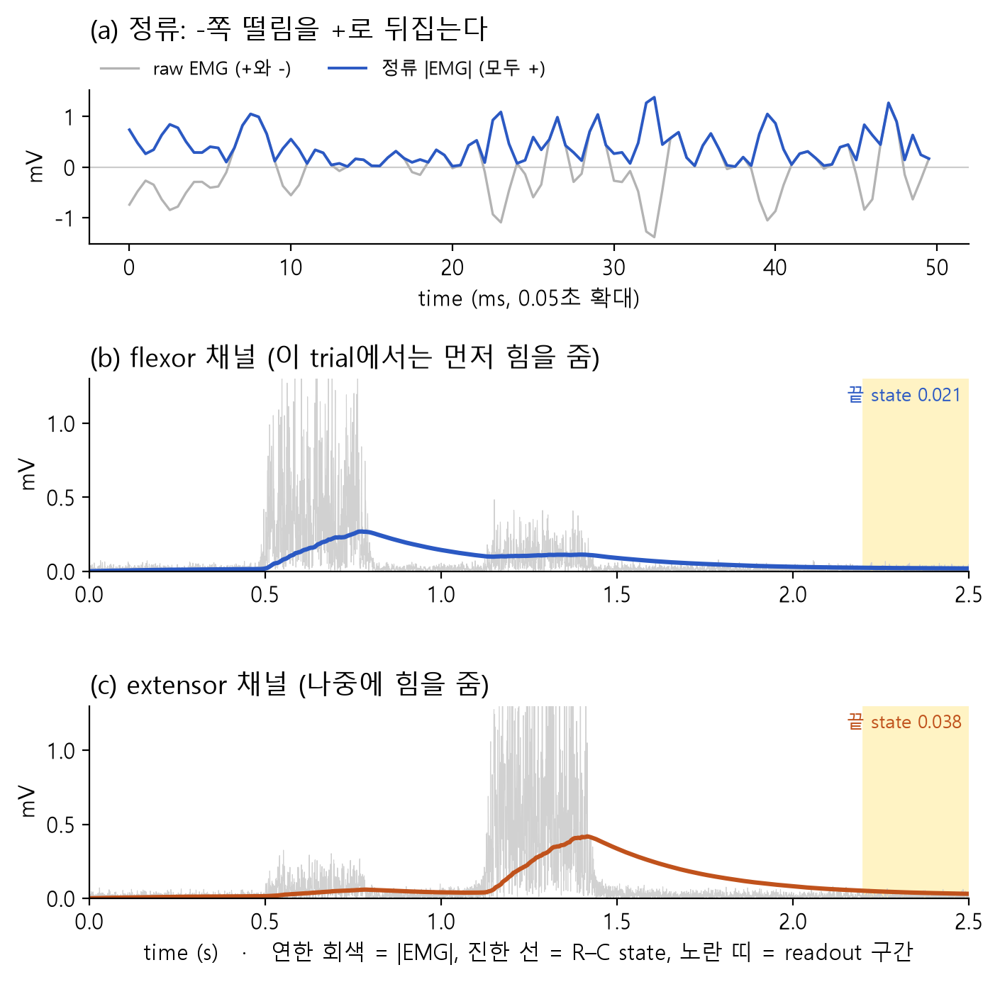
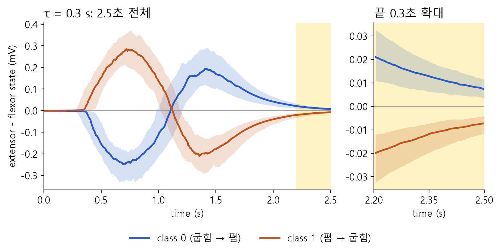
결과가 뜻하는 것. 근육이 다 쉰 끝 구간에도 나중에 쓴 근육의 흔적이 조금 더 남아 있습니다(0.039 대 0.022 mV). 간단한 규칙만으로 1.00을 맞힙니다. 다만 차이가 0.017 mV로 아주 작습니다. 실습 4에서 읽을 때마다 측정 오차(0.01)를 더하면 이 작은 차이가 흐려집니다.
TAU = 0.3을 0.1, 1.0, 3.0으로 바꿔 가며 ▷. TERMINAL 마지막 줄(simple rule)과 둘째 그림 창의 오른쪽(끝 0.3초 확대)이 어떻게 바뀌나요?
- τ = 0.1초 (구멍이 큰 통): 흔적이 금방 빠져 끝에서는 두 채널 모두 쉬는 근육 수준(0.017)만 남습니다. 0.46, 찍기입니다.
- τ = 1초: 흔적이 넉넉히 남아 0.85. 그런데 먼저 쓴 근육의 흔적도 꽤 남아서 0.3초보다 덜 또렷합니다.
- τ = 3초 (구멍이 아주 작은 통): 두 근육의 흔적이 모두 쌓여 비슷해집니다. 0.64. 아래 그림처럼 끝 구간에서 두 띠가 크게 겹칩니다.
PS C:\Users\내이름\Desktop\ion-projects-code> & python mylabs/p5_3_rc.py
==========================================================
R-C, tau = 3 s
==========================================================
after 0.5 s of rest, the trace keeps : 85%
after 1.0 s of rest, the trace keeps : 72%
mean state in the readout window (2.2-2.5 s), mV
flexor extensor extensor - flexor
class 0 0.055 0.064 +0.009
class 1 0.064 0.058 -0.006
simple rule 'extensor > flexor -> class 0' : balanced accuracy 0.64 (chance 0.50)
PS C:\Users\내이름\Desktop\ion-projects-code>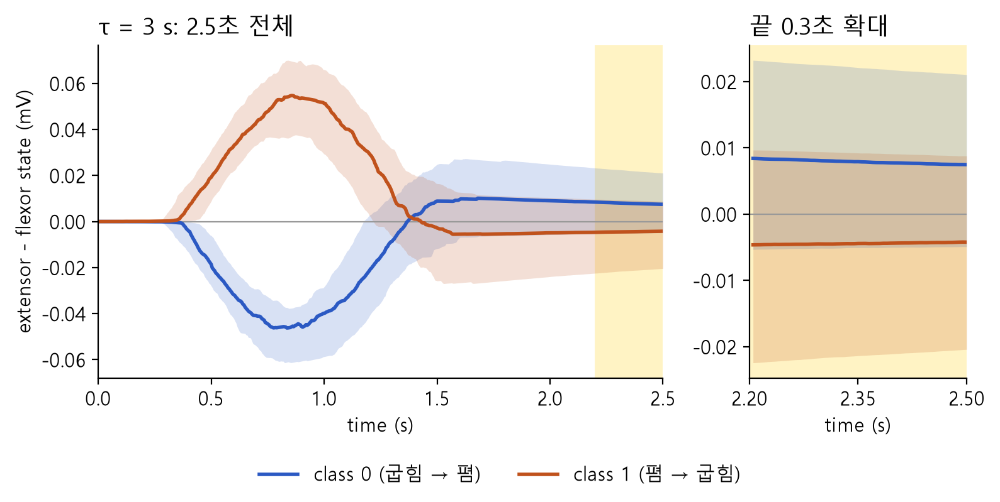
P1에서 본 산 모양과 같습니다. τ가 과제의 시간 규모(약 0.5–2초 전의 일)와 맞아야 합니다.
실습 4. 모형별로 끝만 읽어 채점하기 (p5_4_models.py)
실습 3의 간단한 규칙 대신 P5.1과 같은 readout(학습한 무게)으로, 여러 모형을 공정하게 채점합니다. 모든 모형은 끝 0.3초에서 읽은 숫자만 씁니다(digital만 예외, 기준으로 둠). 읽을 때마다 측정 오차를 더해 실제 측정처럼 만듭니다.
핵심 질문은 둘입니다. 흔적이 있으면 끝만 읽어도 맞히나? 그리고 τ가 다른 흔적 여러 개가 하나보다 나은가? 소자 모형 그림 아래의 A·B처럼 흔적 하나에는 "얼마나 세게"와 "얼마나 오래 전에"가 섞이기 때문입니다.
physical reservoir: 재료나 소자 자체의 물리 현상(이온이 모였다 빠지는 것 등)을 reservoir로 쓰는 것. reservoir는 입력을 여러 가지 흔적으로 바꿔 두는 덩어리이고, 답은 간단한 readout이 냅니다. 여기서는 채널마다 τ가 다른 node 4개(0.1·0.3·1·3초)를 나란히 둔 가장 단순한 형태입니다. node = 빗물통 하나.
saturation (포화): 빗물통이 거의 차면 비가 더 와도 물이 잘 안 오르는 것처럼, state가 커질수록 덜 오르는 성질. reservoir node에는 포화가 있고, 비교용 "R–C ×4"에는 없습니다.
readout rate · readout noise: state를 1초에 몇 번 읽는지(Hz), 읽을 때마다 생기는 측정 오차의 크기. 20 Hz면 끝 0.3초에 6번 읽고 평균합니다.
| 모형 | 빗물통으로 치면 | 끝 0.3초에 읽는 숫자 |
|---|---|---|
| no memory | 통 없이 지금 내리는 비만 봄 | 끝 구간 EMG의 세기, 채널마다 1개 = 2개 |
| R–C (τ 0.1·0.3·1·3초) | 구멍 크기가 하나인 통, 채널마다 1개 | state 2개. τ마다 따로 채점 |
| R–C ×4 (선형) | 구멍 크기가 다른 통 4개, 채널마다 | state 8개, 포화 없음 |
| reservoir (포화) | 구멍 크기가 다른 통 4개 + 거의 차면 덜 참 | state 8개 |
| digital (참고) | 통 대신 컴퓨터가 2.5초를 1,000 Hz로 다 저장 | 실습 2와 같은 세기 20개 |
할 일 mylabs에 새 파일 p5_4_models.py → 붙여 넣기 → Ctrl+S → ▷. 그림 창이 두 개 뜹니다.
mylabs/p5_4_models.py
# ============================================================
# P5 실습 4 · 모형별 채점: 끝 0.3초만 읽고 순서를 맞힐까
#
# 전체 과정:
#
# 실습 1과 같은 가짜 EMG (trial 200개) → 정류 |EMG|
# ↓
# 소자 모형 세 가지에 넣기
# · R–C 하나 : τ 하나인 빗물통, 채널마다 1개 (τ를 바꿔 가며 따로)
# · R–C ×4 (선형) : τ가 다른 빗물통 4개, 채널마다
# · reservoir : τ가 다른 node 4개 + 포화(거의 차면 덜 오름)
# ↓
# 끝 0.3초에서 READ_RATE Hz로 state를 읽기 (읽을 때마다 측정 오차 READ_NOISE) → 평균
# ↓
# readout (실습 2와 같은 ridge, 5-fold cross-validation) → balanced accuracy
# 비교: no memory (끝 0.3초 EMG 세기만) · digital (2.5초 전체를 1000 Hz로, 참고)
# ↓
# [그림 1] trial 하나에서 reservoir node 4개의 state와 읽는 점
# [그림 2] 모형마다 맞힌 비율 막대그래프
# ============================================================
import numpy as np
import matplotlib.pyplot as plt
# ============================================================
# 0. 그림 설정 — 건드리지 않아도 됩니다
# ============================================================
plt.rcParams.update({
"font.family": "Malgun Gothic", "axes.unicode_minus": False, "font.size": 11,
"legend.frameon": False, "axes.spines.top": False, "axes.spines.right": False,
})
# ============================================================
# 1. 바꿔 볼 수 있는 설정값 ← 여기를 바꿔 보세요
# ============================================================
READ_RATE = 20 # 끝 0.3초 동안 state를 1초에 몇 번 읽나 (Hz). 200을 나누는 수: 5, 10, 20, 25, 40, 50, 100
READ_NOISE = 0.01 # 읽을 때마다 더해지는 측정 오차의 크기 (state와 같은 단위, mV)
TAUS = [0.1, 0.3, 1, 3] # node들의 time constant τ (초)
N_TRIALS = 200
SEED = 1
# ============================================================
# 2. 가짜 EMG 만들기 (실습 1–3과 같은 코드)
# ============================================================
FS_MAKE, T, END = 2000, 2.5, 2.2
N = int(FS_MAKE * T)
def band(x, lo, hi):
F = np.fft.rfft(x, axis=-1)
f = np.fft.rfftfreq(x.shape[-1], 1 / FS_MAKE)
F[..., (f < lo) | (f > hi)] = 0
return np.fft.irfft(F, x.shape[-1], axis=-1)
def burst(t, start, dur, ramp=0.05):
w = np.minimum(np.clip((t - start) / ramp, 0, 1), np.clip((start + dur - t) / ramp, 0, 1))
return 0.5 - 0.5 * np.cos(np.pi * w)
def make_emg(n, seed, crosstalk=0.15, sensor_noise=0.005):
rng = np.random.default_rng(seed)
y = np.arange(n) % 2
rng.shuffle(y)
t = np.arange(N) / FS_MAKE
s1, d1, gap, d2 = (rng.uniform(lo, hi, (n, 1)) for lo, hi in ((0.2, 0.5), (0.3, 0.6), (0.1, 0.3), (0.3, 0.6)))
a1, a2 = rng.uniform(0.3, 1.0, (n, 1)), rng.uniform(0.3, 1.0, (n, 1))
first, second = a1 * burst(t, s1, d1), a2 * burst(t, s1 + d1 + gap, d2)
flex = np.where(y[:, None] == 0, first, second)
ext = np.where(y[:, None] == 0, second, first)
env = np.stack([flex + crosstalk * ext, ext + crosstalk * flex], axis=1) + 0.02
shake = band(rng.normal(size=(n, 2, N)), 20, 450)
shake = shake / shake.std(axis=-1, keepdims=True)
emg = band(env * shake, 20, 450) + rng.normal(0, sensor_noise, (n, 2, N))
return emg, y
emg, y = make_emg(N_TRIALS, SEED)
t = np.arange(N) / FS_MAKE
# ============================================================
# 3. 소자 모형: 정류한 EMG를 node마다 천천히 따라가기
# ============================================================
#
# u = |EMG| (정류), 0.5 ms(dt)마다 node 하나하나:
#
# 선형 (R–C): state = a × state + (1 − a) × u, a = e^(−dt/τ)
# 포화 (reservoir node):
# state += dt/τ × ( 2·u·(1 − state) − state )
# ↑ state가 1에 가까울수록 (1 − state)가 작아져 덜 오른다 = 포화
#
# node끼리는 이어져 있지 않다 (τ가 다른 소자 여러 개를 나란히 둔 셈).
# 실제 이온 소자의 식이 아니라 흉내 낸 수식이다.
# 기록은 5 ms마다 (1초에 GRID = 200번).
# ============================================================
GRID = 200
def device(emg, taus, saturate):
"""결과 state: (trial, 채널 2, node 수, 기록 500개)"""
u = np.abs(emg)
tau = np.array(taus, float)[None, None, :]
x = np.zeros(u.shape[:2] + (len(taus),))
step = FS_MAKE // GRID
out = np.zeros(x.shape + (N // step,))
dt = 1 / FS_MAKE
a = np.exp(-dt / tau)
for k in range(N):
uk = u[:, :, k:k + 1]
if saturate:
x = x + dt / tau * (2.0 * uk * (1 - x) - x)
else:
x = a * x + (1 - a) * uk
if (k + 1) % step == 0:
out[..., (k + 1) // step - 1] = x
return out
lin = device(emg, TAUS, saturate=False) # R–C들
sat = device(emg, TAUS, saturate=True) # reservoir
# ============================================================
# 4. 끝 0.3초에서 state 읽기
# ============================================================
#
# 2.5초에서 거꾸로 1/READ_RATE초 간격으로 읽는다. 20 Hz면 50 ms 간격 → 6번.
# 읽을 때마다 측정 오차를 더하고, 6번을 평균한 값을 readout에 넘긴다.
# ============================================================
if GRID % READ_RATE:
raise SystemExit(f"READ_RATE = {READ_RATE}: 200을 나누는 수만 됩니다 (5, 10, 20, 25, 40, 50, 100)")
def read_end(S, rate, noise, seed):
"""(trial, …, 기록) → 끝 구간에서 읽어 평균한 값 (trial, 숫자 개수)"""
rng = np.random.default_rng([seed, rate])
idx = np.arange(S.shape[-1] - 1, int(END * GRID) - 1, -(GRID // rate))
R = S[..., idx] + rng.normal(0, noise, S.shape[:-1] + (len(idx),))
return R.mean(-1).reshape(len(S), -1)
def digital_features(emg, fs=1000):
"""참고용: raw EMG를 fs Hz로 집어(filter 포함) 0.25초 칸 10개 × 채널 2 = 세기 20개 (실습 2와 같음)"""
x = band(emg, 0, fs / 2)
x = x[..., FS_MAKE // fs - 1::FS_MAKE // fs]
return np.stack([np.sqrt((w ** 2).mean(-1)) for w in np.array_split(x, 10, axis=-1)], -1).reshape(len(x), -1)
# ============================================================
# 5. readout과 채점 (실습 2와 같은 코드)
# ============================================================
def cross_validate(F, y, seed, folds=5, lam=1.0):
rng = np.random.default_rng(seed)
i0, i1 = rng.permutation(np.where(y == 0)[0]), rng.permutation(np.where(y == 1)[0])
parts = [np.concatenate([i0[f::folds], i1[f::folds]]) for f in range(folds)]
scores = []
for f in range(folds):
test = parts[f]
train = np.concatenate([parts[g] for g in range(folds) if g != f])
mu, sd = F[train].mean(0), F[train].std(0) + 1e-12
A = np.hstack([(F[train] - mu) / sd, np.ones((len(train), 1))])
w = np.linalg.solve(A.T @ A + lam * np.eye(A.shape[1]), A.T @ (2.0 * y[train] - 1))
B = np.hstack([(F[test] - mu) / sd, np.ones((len(test), 1))])
pred = (B @ w > 0).astype(int)
scores.append(np.mean([np.mean(pred[y[test] == c] == c) for c in (0, 1)]))
return np.mean(scores), np.std(scores)
rng = np.random.default_rng(SEED + 7)
# no memory: 끝 0.3초 raw EMG의 세기(RMS)를 채널마다 1개. 읽을 때 같은 크기의 측정 오차.
nm = np.sqrt((emg[..., int(END * FS_MAKE):] ** 2).mean(-1))
models = [("no memory", "end RMS of raw EMG", nm + rng.normal(0, READ_NOISE, nm.shape))]
for j, tau in enumerate(TAUS):
models.append(("R-C", f"tau = {tau:g} s", read_end(lin[:, :, j:j + 1], READ_RATE, READ_NOISE, SEED)))
models.append(("R-C x4 (linear)", f"tau = {min(TAUS):g}-{max(TAUS):g} s", read_end(lin, READ_RATE, READ_NOISE, SEED)))
models.append(("reservoir", f"{len(TAUS)} saturating nodes", read_end(sat, READ_RATE, READ_NOISE, SEED)))
models.append(("digital (reference)", "all 2.5 s at 1000 Hz", digital_features(emg)))
print("=" * 76)
print(f"readout: only the last 0.3 s, states read at {READ_RATE} Hz and averaged, readout noise {READ_NOISE:g}")
print("=" * 76)
print("model setting numbers balanced label")
print(" read accuracy +/- shuffle")
print("------------------- -------------------- ------- -------- ---- -------")
results = []
for name, setting, F in models:
acc, sd = cross_validate(F, y, SEED)
shuffled = np.mean([cross_validate(F, rng.permutation(y), SEED)[0] for _ in range(20)])
results.append((name, setting, F.shape[1], acc, sd, shuffled))
print(f"{name:<19} {setting:<20} {F.shape[1]:>5} {acc:.2f} {sd:.2f} {shuffled:.2f}")
# ============================================================
# 6. [그림 1] class 0 trial 하나: reservoir node 4개의 state와 읽는 점
# ============================================================
i = int(np.where(y == 0)[0][0])
tg = np.arange(1, sat.shape[-1] + 1) / GRID
idx = np.arange(sat.shape[-1] - 1, int(END * GRID) - 1, -(GRID // READ_RATE))
blues = plt.cm.Blues(np.linspace(0.4, 0.95, len(TAUS))) # 연한 파랑 = 빠른 node, 남색 = 느린 node
fig, axs = plt.subplots(2, 1, figsize=(8, 6.4), sharex=True)
for ax, c, tag in zip(axs, (0, 1), ("(a) flexor 채널 (이 trial에서는 먼저 힘을 줌)", "(b) extensor 채널 (나중에 힘을 줌)")):
ax.axvspan(END, T, color="#fff3c4", zorder=0)
ax.plot(t, np.abs(emg[i, c]), color="0.85", lw=0.4)
for j, tau in enumerate(TAUS):
ax.plot(tg, sat[i, c, j], color=blues[j], lw=1.8, label=f"node τ = {tau:g} s")
ax.plot(tg[idx], sat[i, c, j, idx], "o", color="#c0521c", ms=4)
ax.set_ylim(0, 1.3)
ax.set_ylabel("|EMG| (mV) · state")
ax.set_title(tag, loc="left", pad=6)
axs[1].set_xlabel("time (s)")
axs[1].set_xlim(0, T)
handles = [plt.Line2D([], [], color="0.75", lw=1.2, label="정류된 EMG |EMG|")] + axs[0].get_legend_handles_labels()[0] + \
[plt.Line2D([], [], color="#c0521c", marker="o", ls="none", ms=4, label=f"읽는 점 ({READ_RATE} Hz)")]
fig.tight_layout(rect=(0, 0.1, 1, 1))
fig.legend(handles=handles, loc="lower center", ncol=3)
# ============================================================
# 7. [그림 2] 모형마다 맞힌 비율
# ============================================================
#
# 막대 = balanced accuracy, 막대 끝 세로선 = +/-,
# 검은 짧은 가로선 = label shuffle (0.50 근처면 정상), 점선 = chance 0.50
# ============================================================
labels = ["no memory"] + [f"R–C\nτ {tau:g} s" for tau in TAUS] + ["R–C ×4\n(선형)", "reservoir\n(포화)", "digital\n(참고)"]
colors = ["#9a8f86"] + ["#5b8fd6"] * len(TAUS) + ["#2b59c3", "#c0521c", "#4f7f5d"]
xs = np.arange(len(results))
acc = np.array([r[3] for r in results])
sd = np.array([r[4] for r in results])
fig2, ax2 = plt.subplots(figsize=(8, 4.4))
ax2.bar(xs, acc, yerr=sd, color=colors, width=0.62, capsize=3)
ax2.plot(xs, [r[5] for r in results], "_", color="k", ms=18, mew=2)
ax2.axhline(0.5, color="0.6", ls=":", lw=1.3)
for x_, a_, s_ in zip(xs, acc, sd):
ax2.text(x_, a_ + s_ + 0.02, f"{a_:.2f}", ha="center", va="bottom", fontsize=9.5)
ax2.set_xticks(xs, labels, fontsize=9.5)
ax2.set_ylim(0, 1.18)
ax2.set_ylabel("balanced accuracy")
ax2.set_title(f"끝 0.3초만 읽어 맞힌 비율 (state는 {READ_RATE} Hz로 읽음, 측정 오차 {READ_NOISE:g})", loc="left")
fig2.tight_layout(rect=(0, 0.08, 1, 1))
fig2.legend(handles=[plt.Line2D([], [], color="k", marker="_", ms=14, mew=2, ls="none", label="label shuffle (점검)"),
plt.Line2D([], [], color="0.6", ls=":", lw=1.3, label="chance 0.50")],
loc="lower center", ncol=2)
plt.show() # 그림 창 두 개가 뜹니다. 둘 다 닫으면 끝납니다.코드에서 볼 곳.
- 3번 상자
device: 선형(R–C)은 실습 3과 같은 한 줄. 포화 node는state += dt/τ × (2·u·(1 − state) − state)로, state가 1에 가까울수록(1 − state)가 작아져 덜 오릅니다. - 4번 상자
read_end: 2.5초에서 거꾸로1/READ_RATE초 간격으로 읽고(20 Hz면 6번), 읽을 때마다READ_NOISE만큼 흔들린 값을 평균합니다. - 5번 상자
models: 비교할 모형을 한 줄씩 쌓고, 실습 2와 같은cross_validate로 채점합니다.
▷ 실행하면:
PS C:\Users\내이름\Desktop\ion-projects-code> & python mylabs/p5_4_models.py
============================================================================
readout: only the last 0.3 s, states read at 20 Hz and averaged, readout noise 0.01
============================================================================
model setting numbers balanced label
read accuracy +/- shuffle
------------------- -------------------- ------- -------- ---- -------
no memory end RMS of raw EMG 2 0.59 0.08 0.51
R-C tau = 0.1 s 2 0.47 0.07 0.51
R-C tau = 0.3 s 2 0.93 0.02 0.49
R-C tau = 1 s 2 0.86 0.05 0.51
R-C tau = 3 s 2 0.61 0.06 0.49
R-C x4 (linear) tau = 0.1-3 s 8 0.96 0.03 0.50
reservoir 4 saturating nodes 8 1.00 0.00 0.49
digital (reference) all 2.5 s at 1000 Hz 20 0.99 0.01 0.50
PS C:\Users\내이름\Desktop\ion-projects-code>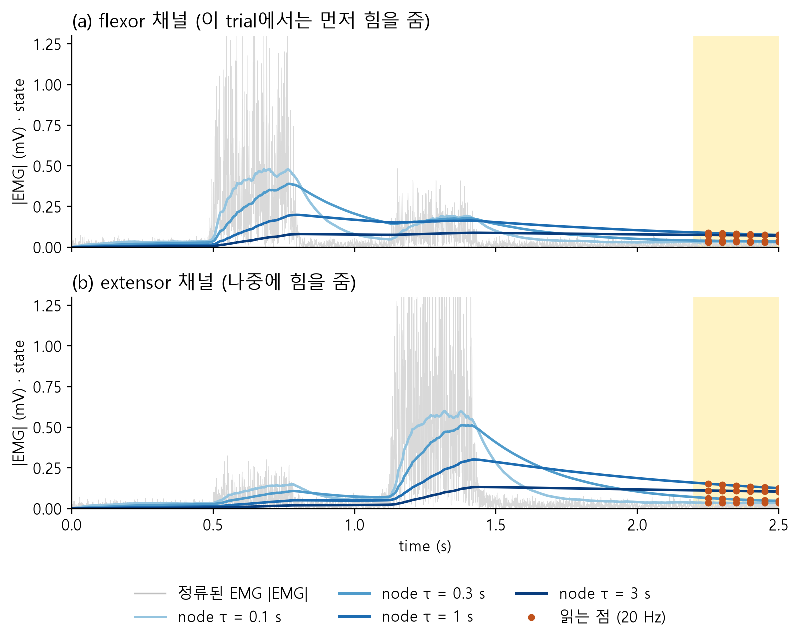
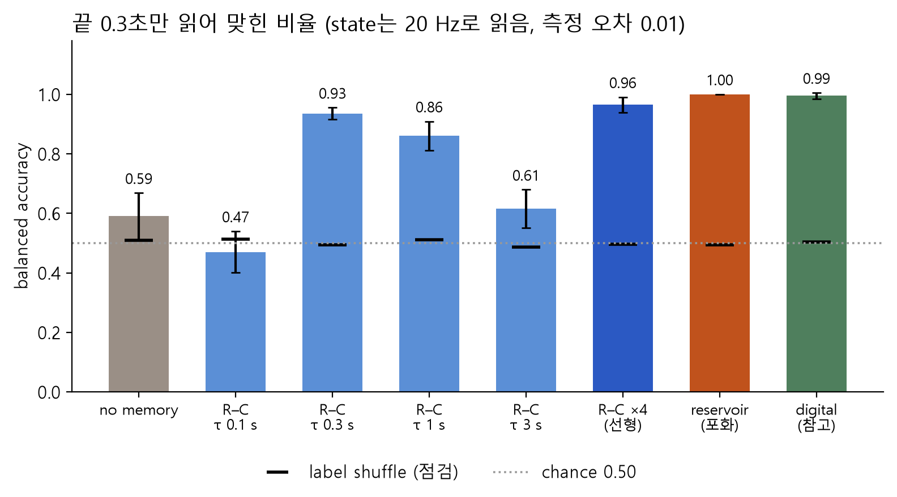
결과가 뜻하는 것.
- no memory는 찍기 수준(0.59)입니다. 0.50보다 조금 높은 것은 우연의 흔들림입니다(
+/-0.08로 큼).SEED = 2,3으로 돌리면 0.49가 나옵니다. - R–C 하나는 τ에 따라 산 모양입니다. τ 0.3초가 0.93으로 가장 좋습니다. 이유는 실습 3의 끝 구간 확대 그림에서 이미 봤습니다: τ 0.3초에서는 두 class의 띠가 떨어져 있고(그림 7), τ 3초에서는 크게 겹칩니다(그림 8). 실습 3에서 간단한 규칙으로 1.00이던 것이 측정 오차 때문에 조금 떨어졌습니다.
- τ가 다른 흔적 여러 개(R–C ×4 0.96, reservoir 1.00)가 R–C 하나보다 낫습니다. 끝만 읽고도 2.5초 전체를 본 digital(0.99)만큼 맞힙니다.
READ_NOISE = 0.01을 0.05(측정 오차 다섯 배)로 바꿔 ▷. 어느 모형이 가장 버틸까요?
모두 떨어지지만 reservoir가 0.85로 가장 버팁니다. R–C ×4(선형)는 0.76, 가장 좋은 R–C 하나는 τ 1초의 0.77입니다. 오차가 작을 때는 R–C ×4와 reservoir가 비슷했는데, 오차가 커지자 차이가 벌어졌습니다. 포화 node는 작은 입력에서 더 가파르게 올라 흔적의 차이를 키운 셈입니다 [이 수식 모형에서만 확인].
PS C:\Users\내이름\Desktop\ion-projects-code> & python mylabs/p5_4_models.py
============================================================================
readout: only the last 0.3 s, states read at 20 Hz and averaged, readout noise 0.05
============================================================================
model setting numbers balanced label
read accuracy +/- shuffle
------------------- -------------------- ------- -------- ---- -------
no memory end RMS of raw EMG 2 0.58 0.10 0.51
R-C tau = 0.1 s 2 0.47 0.06 0.51
R-C tau = 0.3 s 2 0.65 0.07 0.49
R-C tau = 1 s 2 0.77 0.06 0.53
R-C tau = 3 s 2 0.59 0.04 0.48
R-C x4 (linear) tau = 0.1-3 s 8 0.76 0.02 0.49
reservoir 4 saturating nodes 8 0.85 0.02 0.51
digital (reference) all 2.5 s at 1000 Hz 20 0.99 0.01 0.50
PS C:\Users\내이름\Desktop\ion-projects-code>실습 5. 판정 한 번에 보내는 bit 비교 (p5_5_bits.py)
이제 "보내는 숫자가 줄어든다"를 직접 셉니다. digital은 판정 한 번을 위해 2.5초 전체의 숫자를 보내야 하고, 소자는 끝 0.3초에 읽은 state만 보내면 됩니다. rate를 바꿔 가며 보내는 bit와 맞힌 비율을 한 그래프에 놓습니다.
bits per decision (판정 한 번에 보내는 bit): 답 하나를 내려고 센서 밖으로 보내는 0과 1의 개수. digital 1,000 Hz = 2채널 × 1,000 Hz × 2.5초 × 12 bit = 60,000. reservoir 20 Hz = state 8개 × 6번 × 12 bit = 576.
bit/s if streaming: 쉬지 않고 계속 보낼 때 1초에 보내는 bit. reservoir 20 Hz = 8 × 20 × 12 = 1,920.
in-sensor computing: 계산의 일부(여기서는 정류와 기억)를 센서 자리의 소자가 직접 해서, 밖으로 보내는 숫자와 숫자로 바꾸는 횟수를 줄이려는 생각.
할 일 mylabs에 새 파일 p5_5_bits.py → 붙여 넣기 → Ctrl+S → ▷.
mylabs/p5_5_bits.py
# ============================================================
# P5 실습 5 · 판정 한 번에 센서 밖으로 보내는 bit 비교
#
# 전체 과정:
#
# 실습 4와 같은 가짜 EMG · 소자 모형 (reservoir node 4개, R–C 하나)
# ↓
# 길 1. digital : raw EMG를 2.5초 내내 숫자로 바꿔 모두 보냄
# bit = 채널 2 × sampling rate × 2.5초 × BITS
# 길 2. 소자 : 소자가 흔적을 들고 있고, 끝 0.3초에서 state만 몇 번 읽어 보냄
# bit = state 개수 × 읽는 횟수 × BITS
# ↓
# rate를 바꿔 가며 '판정 한 번에 보내는 bit'와 맞힌 비율을 표로
# ↓
# [그림] (a) 언제 숫자를 보내나 (시간 막대) (b) 보내는 bit와 맞힌 비율
# ============================================================
import numpy as np
import matplotlib.pyplot as plt
# ============================================================
# 0. 그림 설정 — 건드리지 않아도 됩니다
# ============================================================
plt.rcParams.update({
"font.family": "Malgun Gothic", "axes.unicode_minus": False, "font.size": 11,
"legend.frameon": False, "axes.spines.top": False, "axes.spines.right": False,
})
# ============================================================
# 1. 바꿔 볼 수 있는 설정값 ← 여기를 바꿔 보세요
# ============================================================
DIGITAL_RATES = [1000, 500, 200, 100, 50] # digital: raw EMG를 집는 sampling rate들 (2000을 나누는 수)
READ_RATES = [50, 20, 10, 5] # 소자: 끝 0.3초에서 state를 읽는 rate들 (200을 나누는 수)
RC_TAU = 0.3 # 비교할 R–C 하나의 τ (초)
READ_NOISE = 0.01 # state를 읽을 때마다 더해지는 측정 오차
BITS = 12 # 숫자 하나 = 12 bit (bit 수 계산에만 씀, 반올림 오차는 넣지 않음)
N_TRIALS = 200
SEED = 1
# ============================================================
# 2. 가짜 EMG · 소자 모형 · 읽기 · 채점 (실습 1–4와 같은 코드)
# ============================================================
FS_MAKE, T, END, GRID = 2000, 2.5, 2.2, 200
N = int(FS_MAKE * T)
TAUS = [0.1, 0.3, 1, 3] # reservoir node 4개
def band(x, lo, hi):
F = np.fft.rfft(x, axis=-1)
f = np.fft.rfftfreq(x.shape[-1], 1 / FS_MAKE)
F[..., (f < lo) | (f > hi)] = 0
return np.fft.irfft(F, x.shape[-1], axis=-1)
def burst(t, start, dur, ramp=0.05):
w = np.minimum(np.clip((t - start) / ramp, 0, 1), np.clip((start + dur - t) / ramp, 0, 1))
return 0.5 - 0.5 * np.cos(np.pi * w)
def make_emg(n, seed, crosstalk=0.15, sensor_noise=0.005):
rng = np.random.default_rng(seed)
y = np.arange(n) % 2
rng.shuffle(y)
t = np.arange(N) / FS_MAKE
s1, d1, gap, d2 = (rng.uniform(lo, hi, (n, 1)) for lo, hi in ((0.2, 0.5), (0.3, 0.6), (0.1, 0.3), (0.3, 0.6)))
a1, a2 = rng.uniform(0.3, 1.0, (n, 1)), rng.uniform(0.3, 1.0, (n, 1))
first, second = a1 * burst(t, s1, d1), a2 * burst(t, s1 + d1 + gap, d2)
flex = np.where(y[:, None] == 0, first, second)
ext = np.where(y[:, None] == 0, second, first)
env = np.stack([flex + crosstalk * ext, ext + crosstalk * flex], axis=1) + 0.02
shake = band(rng.normal(size=(n, 2, N)), 20, 450)
shake = shake / shake.std(axis=-1, keepdims=True)
emg = band(env * shake, 20, 450) + rng.normal(0, sensor_noise, (n, 2, N))
return emg, y
def device(emg, taus, saturate):
"""정류 |EMG| → node마다 천천히 따라가기 (실습 4와 같음). 결과 (trial, 채널, node, 기록 500개)"""
u = np.abs(emg)
tau = np.array(taus, float)[None, None, :]
x = np.zeros(u.shape[:2] + (len(taus),))
step = FS_MAKE // GRID
out = np.zeros(x.shape + (N // step,))
dt = 1 / FS_MAKE
a = np.exp(-dt / tau)
for k in range(N):
uk = u[:, :, k:k + 1]
x = x + dt / tau * (2.0 * uk * (1 - x) - x) if saturate else a * x + (1 - a) * uk
if (k + 1) % step == 0:
out[..., (k + 1) // step - 1] = x
return out
def read_times(rate):
"""끝 0.3초 안에서 state를 읽는 기록 번호들 (2.5초에서 거꾸로 1/rate초 간격)"""
return np.arange(int(T * GRID) - 1, int(END * GRID) - 1, -(GRID // rate))
def read_end(S, rate, noise, seed):
rng = np.random.default_rng([seed, rate])
idx = read_times(rate)
R = S[..., idx] + rng.normal(0, noise, S.shape[:-1] + (len(idx),))
return R.mean(-1).reshape(len(S), -1)
def digital_features(emg, fs):
x = band(emg, 0, fs / 2) if fs < FS_MAKE else emg
x = x[..., FS_MAKE // fs - 1::FS_MAKE // fs]
return np.stack([np.sqrt((w ** 2).mean(-1)) for w in np.array_split(x, 10, axis=-1)], -1).reshape(len(x), -1)
def cross_validate(F, y, seed, folds=5, lam=1.0):
rng = np.random.default_rng(seed)
i0, i1 = rng.permutation(np.where(y == 0)[0]), rng.permutation(np.where(y == 1)[0])
parts = [np.concatenate([i0[f::folds], i1[f::folds]]) for f in range(folds)]
scores = []
for f in range(folds):
test = parts[f]
train = np.concatenate([parts[g] for g in range(folds) if g != f])
mu, sd = F[train].mean(0), F[train].std(0) + 1e-12
A = np.hstack([(F[train] - mu) / sd, np.ones((len(train), 1))])
w = np.linalg.solve(A.T @ A + lam * np.eye(A.shape[1]), A.T @ (2.0 * y[train] - 1))
B = np.hstack([(F[test] - mu) / sd, np.ones((len(test), 1))])
pred = (B @ w > 0).astype(int)
scores.append(np.mean([np.mean(pred[y[test] == c] == c) for c in (0, 1)]))
return np.mean(scores), np.std(scores)
for fs in DIGITAL_RATES:
if FS_MAKE % fs:
raise SystemExit(f"DIGITAL_RATES의 {fs}: 2000을 나누는 수만 됩니다")
for r in READ_RATES:
if GRID % r:
raise SystemExit(f"READ_RATES의 {r}: 200을 나누는 수만 됩니다 (5, 10, 20, 25, 40, 50, 100)")
emg, y = make_emg(N_TRIALS, SEED)
sat = device(emg, TAUS, saturate=True) # reservoir: state 4개 × 채널 2 = 8개
rc = device(emg, [RC_TAU], saturate=False) # R–C 하나: state 1개 × 채널 2 = 2개
# ============================================================
# 3. 길마다 '판정 한 번에 보내는 bit'와 맞힌 비율
# ============================================================
#
# bit/s if streaming : 쉬지 않고 계속 보낼 때 1초에 보내는 bit
# bits per decision : 답 하나를 내려고 보내야 하는 bit
# digital = 2.5초 전체가 필요 → 2 × rate × 2.5 × BITS
# 소자 = 끝 0.3초에 읽은 것만 → 숫자 개수 × 읽는 횟수 × BITS
# ============================================================
rows = []
for fs in DIGITAL_RATES:
acc, _ = cross_validate(digital_features(emg, fs), y, SEED)
rows.append(("digital raw EMG", fs, 2, 2 * fs * BITS, int(2 * fs * T * BITS), acc))
for name, S in (("reservoir states", sat), (f"R-C states (tau={RC_TAU:g}s)", rc)):
for r in READ_RATES:
F = read_end(S, r, READ_NOISE, SEED)
reads = len(read_times(r))
rows.append((name, r, F.shape[1], F.shape[1] * r * BITS, F.shape[1] * reads * BITS, cross_validate(F, y, SEED)[0]))
print("=" * 72)
print(f"how many bits must leave the sensor ({BITS} bit per number)")
print(" digital: the whole 2.5 s is needed; device: only the reads in the last 0.3 s")
print("=" * 72)
print(" rate numbers bit/s if bits per balanced")
print("path (Hz) per read streaming decision accuracy")
print("--------------------- ---- -------- --------- -------- --------")
for path, rate, num, bps, bpd, acc in rows:
print(f"{path:<21} {rate:>4} {num:>2} {bps:>7} {bpd:>6} {acc:.2f}")
# ============================================================
# 4. 그래프 (a): 한 trial 동안 언제 숫자를 보내나
# ============================================================
#
# 세로 막대 하나 = 숫자를 한 번 보내는 순간.
# digital은 2.5초 내내, 소자는 끝 0.3초(노란 띠)에서만.
# ============================================================
fig = plt.figure(figsize=(8, 7.4))
gs = fig.add_gridspec(2, 1, height_ratios=[0.75, 1.25], hspace=0.6)
ax = fig.add_subplot(gs[0])
ax.axvspan(END, T, color="#fff3c4", zorder=0)
show = [(f"digital {max(DIGITAL_RATES)} Hz", np.arange(1, int(max(DIGITAL_RATES) * T) + 1) / max(DIGITAL_RATES),
"#4f7f5d", int(2 * max(DIGITAL_RATES) * T * BITS)),
(f"digital {min(DIGITAL_RATES)} Hz", np.arange(1, int(min(DIGITAL_RATES) * T) + 1) / min(DIGITAL_RATES),
"#4f7f5d", int(2 * min(DIGITAL_RATES) * T * BITS))]
r_show = 20 if 20 in READ_RATES else READ_RATES[0]
show.append((f"reservoir {r_show} Hz", (read_times(r_show) + 1) / GRID, "#c0521c", 2 * len(TAUS) * len(read_times(r_show)) * BITS))
for row, (label, times, col, bits) in enumerate(show):
yy = len(show) - 1 - row
ax.vlines(times, yy - 0.32, yy + 0.32, color=col, lw=0.6 if len(times) > 200 else 1.6)
ax.text(T + 0.04, yy, f"{bits:,} bit", va="center", ha="left", fontsize=10, color=col)
ax.set_yticks(range(len(show)), [s[0] for s in show][::-1])
ax.set_xlim(0, T)
ax.set_ylim(-0.6, len(show) - 0.4)
ax.set_xlabel("time (s) in one trial · 노란 띠 = readout 구간")
ax.set_title("(a) 판정 한 번을 위해 숫자를 보내는 순간들 (오른쪽 = 보내는 bit)", loc="left")
ax.spines["left"].set_visible(False)
ax.tick_params(axis="y", length=0)
# ============================================================
# 5. 그래프 (b): 판정 한 번에 보내는 bit와 맞힌 비율
#
# 점 옆 숫자 = rate (Hz). dy = 숫자를 점에서 얼마나 띄울지 (가로, 세로)
# ============================================================
ax = fig.add_subplot(gs[1])
for name, label, col, mk, ls, dy in (("digital raw EMG", "digital: raw EMG를 숫자로", "#4f7f5d", "s", "-", (0, 9)),
("reservoir states", f"reservoir state {2 * len(TAUS)}개", "#c0521c", "o", "-", (0, 9)),
(rows[-1][0], f"R–C state 2개 (τ {RC_TAU:g} s)", "#2b59c3", "^", "--", (6, -12))):
sel = [r for r in rows if r[0] == name]
ax.plot([r[4] for r in sel], [r[5] for r in sel], marker=mk, color=col, ls=ls, lw=1.8, ms=6, label=label)
for r in sel:
ax.annotate(f"{r[1]}", (r[4], r[5]), textcoords="offset points", xytext=dy, ha="center" if dy[0] == 0 else "left",
fontsize=8.5, color=col)
ax.axhline(0.5, color="0.6", ls=":", lw=1.3)
ax.set_xscale("log")
ax.xaxis.set_major_formatter(plt.FuncFormatter(lambda v, _: f"{v:,.0f}"))
ax.set_ylim(0.3, 1.12)
ax.set_xlabel("판정 한 번에 보내는 bit (로그 눈금). 점 옆 숫자 = rate (Hz)")
ax.set_ylabel("balanced accuracy")
ax.set_title("(b) 왼쪽 위일수록 '적게 보내고 잘 맞힘'", loc="left", pad=26)
ax.legend(loc="lower left", bbox_to_anchor=(0.0, 1.0), ncol=3, borderaxespad=0.2, fontsize=9.5)
plt.show()코드에서 볼 곳.
- 3번 상자의 두 식: digital은
2 × fs × 2.5 × BITS(2.5초 전체), 소자는숫자 개수 × 읽는 횟수 × BITS(끝 0.3초만). 이 두 식이 실습의 전부입니다. READ_RATES: 읽는 횟수를 바꿉니다. 50 Hz면 끝 0.3초에 15번, 5 Hz면 2번(2.5초와 2.3초) 읽습니다.BITS는 개수 계산에만 씁니다. 반올림 오차는 넣지 않았습니다.
▷ 실행하면:
PS C:\Users\내이름\Desktop\ion-projects-code> & python mylabs/p5_5_bits.py
========================================================================
how many bits must leave the sensor (12 bit per number)
digital: the whole 2.5 s is needed; device: only the reads in the last 0.3 s
========================================================================
rate numbers bit/s if bits per balanced
path (Hz) per read streaming decision accuracy
--------------------- ---- -------- --------- -------- --------
digital raw EMG 1000 2 24000 60000 0.99
digital raw EMG 500 2 12000 30000 1.00
digital raw EMG 200 2 4800 12000 0.99
digital raw EMG 100 2 2400 6000 1.00
digital raw EMG 50 2 1200 3000 1.00
reservoir states 50 8 4800 1440 1.00
reservoir states 20 8 1920 576 1.00
reservoir states 10 8 960 288 0.97
reservoir states 5 8 480 192 0.99
R-C states (tau=0.3s) 50 2 1200 360 0.93
R-C states (tau=0.3s) 20 2 480 144 0.93
R-C states (tau=0.3s) 10 2 240 72 0.89
R-C states (tau=0.3s) 5 2 120 48 0.82
PS C:\Users\내이름\Desktop\ion-projects-code>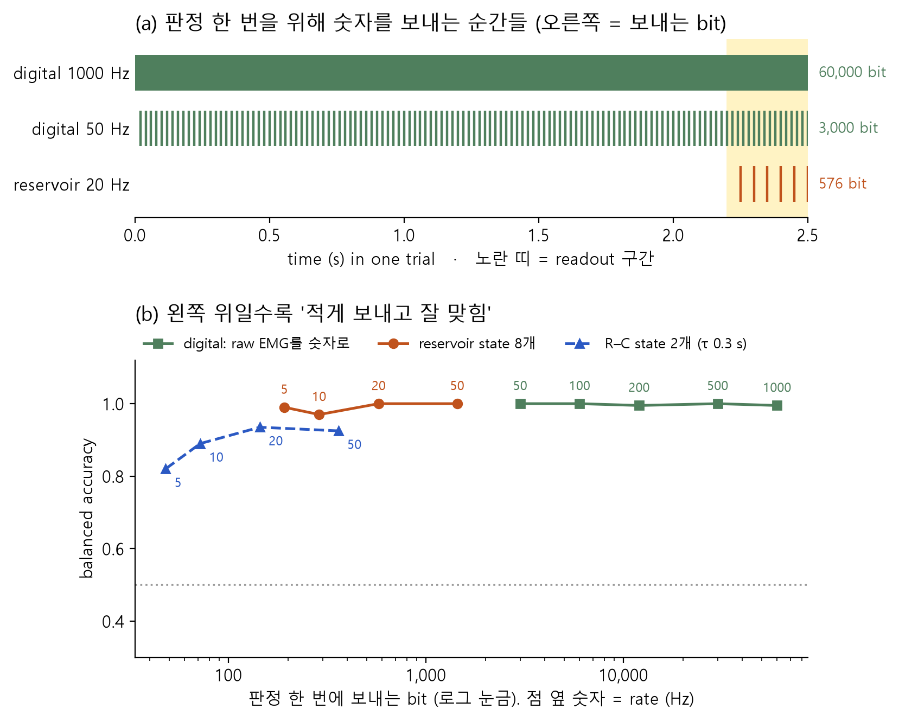
표 읽기. reservoir states 20 8 1920 576 1.00 줄은 "reservoir의 state 8개를 1초에 20번 읽으면, 계속 보낼 때 1,920 bit/s, 판정 한 번에 576 bit이고 1.00을 맞힌다"입니다.
결과가 뜻하는 것. 판정 한 번에 보내는 양은 digital 1,000 Hz 60,000 bit 대 reservoir 20 Hz 576 bit로 약 100배 차이입니다. 그런데 계속 보내는 양(bit/s)으로 보면 digital 50 Hz(1,200)가 reservoir 20 Hz(1,920)보다 적습니다. 이 차이의 뜻은 관찰 적기에서 정리합니다.
READ_NOISE = 0.01을 0.05로 바꿔 ▷. 이번에는 읽는 횟수(rate)에 따라 맞힌 비율이 어떻게 달라지나요?
오차가 커지면 많이 읽을수록 잘 맞힙니다. reservoir는 50 Hz(15번 읽음) 0.90, 20 Hz 0.85, 5 Hz(2번) 0.76입니다. 여러 번 읽어 평균하면 오차가 줄기 때문입니다. digital은 state를 읽지 않으니 그대로 약 1.00입니다. 소자 쪽도 "읽기 오차가 작아야" 적게 보내는 이득이 살아납니다.
PS C:\Users\내이름\Desktop\ion-projects-code> & python mylabs/p5_5_bits.py
========================================================================
how many bits must leave the sensor (12 bit per number)
digital: the whole 2.5 s is needed; device: only the reads in the last 0.3 s
========================================================================
rate numbers bit/s if bits per balanced
path (Hz) per read streaming decision accuracy
--------------------- ---- -------- --------- -------- --------
digital raw EMG 1000 2 24000 60000 0.99
digital raw EMG 500 2 12000 30000 1.00
digital raw EMG 200 2 4800 12000 0.99
digital raw EMG 100 2 2400 6000 1.00
digital raw EMG 50 2 1200 3000 1.00
reservoir states 50 8 4800 1440 0.90
reservoir states 20 8 1920 576 0.85
reservoir states 10 8 960 288 0.74
reservoir states 5 8 480 192 0.76
R-C states (tau=0.3s) 50 2 1200 360 0.75
R-C states (tau=0.3s) 20 2 480 144 0.65
R-C states (tau=0.3s) 10 2 240 72 0.61
R-C states (tau=0.3s) 5 2 120 48 0.56
PS C:\Users\내이름\Desktop\ion-projects-code>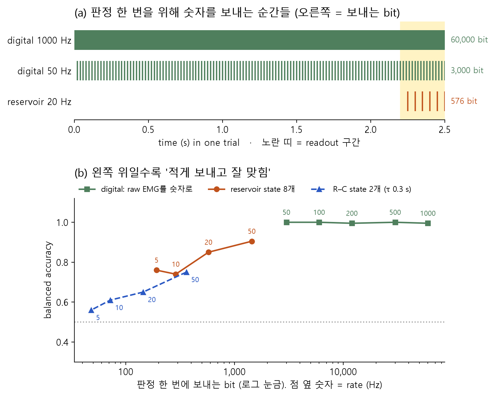
관찰 적기 (완료 조건)
할 일 연구 노트나 메모장에 먼저 내 말로 적고, 그다음 "정답 보기"를 누릅니다.
질문 1. R–C 하나는 가장 좋은 τ(0.3초)에서도 0.93인데, τ가 다른 node 여러 개(R–C ×4, reservoir)는 0.96–1.00입니다. 왜 여러 개가 나을까요? 힌트: 소자 모형 그림의 'A: 세게, 오래 전에'와 'B: 약하게, 방금'.
state 하나에는 "얼마나 세게"와 "얼마나 오래 전에"가 섞여 있습니다. 이 과제는 힘의 세기가 trial마다 세 배까지 다릅니다. 그래서 "세게, 오래 전에" 쓴 근육과 "약하게, 방금" 쓴 근육이 R–C 하나에서는 비슷한 값이 되어 가끔 틀립니다.
빠른 node와 느린 node를 같이 읽으면 둘의 비율이 "얼마나 오래 전에"를 알려 줍니다. 오래 전 일이면 빠른 node는 다 식고 느린 node만 남고, 방금 일이면 둘 다 남습니다(실습 4의 reservoir node 그림). 세기가 두 배가 되면 둘 다 두 배가 되니 비율은 그대로입니다. 그래서 세기가 들쭉날쭉해도 순서를 가려냅니다.
질문 2. 판정 한 번에 보내는 bit는 digital 1,000 Hz가 60,000, reservoir 20 Hz가 576입니다. 약 몇 배 차이인가요? 그런데 계속 보낼 때(bit/s)로 비교하면 reservoir 20 Hz(1,920)와 digital 50 Hz(1,200) 중 어느 쪽이 적나요? 이 차이는 무엇을 말해 줄까요?
약 100배(60,000 ÷ 576 ≈ 104)입니다. digital 50 Hz와 비교해도 약 5배(3,000 ÷ 576)입니다.
그런데 계속 보내는 양으로 보면 digital 50 Hz가 더 적습니다(1,200 < 1,920). reservoir는 숫자 8개를 한꺼번에 읽기 때문입니다. 그러니 소자의 이득은 "1초에 보내는 숫자가 적다"에서 오지 않습니다. 기억을 소자가 들고 있어서, 판정할 때(끝 0.3초)만 읽으면 된다는 데서 옵니다(실습 5 그림의 시간 막대). 그동안 ADC와 무선을 꺼 둘 수 있습니다.
정직하게 덧붙일 것 두 가지. (1) 센서 옆에 작은 컴퓨터(MCU)를 두고 1,000 Hz로 받아 envelope을 계산한 뒤 결과만 보내도 보내는 양은 줄어듭니다. 그때 소자와의 차이는 전력인데, 이 코드는 전력을 재지 않습니다. 전력은 P3.7에서 재는 방법을 봅니다. (2) 이 숫자는 깨끗한 가짜 신호와 수식 소자에서 나온 것입니다.
질문 3. reservoir를 5 Hz로 읽어도(판정 한 번에 192 bit) 0.99입니다. raw EMG는 20 Hz로 집으면 찍기였는데, state는 왜 5 Hz로 읽어도 될까요?
raw EMG는 20 Hz보다 빠른 떨림으로만 되어 있어서, 드물게 집으려면 filter가 그 떨림을 다 지워야 했습니다(실습 2의 FS = 20). state는 소자가 이미 천천히 변하는 흔적으로 바꿔 둔 것입니다. 빗물통 물 높이는 0.2초 사이에 크게 바뀌지 않으니 0.2초에 한 번 봐도 됩니다. 소자의 느림이 그 자체로 filter 역할을 한 셈입니다. 다만 읽는 횟수가 적으면 측정 오차를 평균으로 줄일 기회도 줄어서, R–C는 5 Hz에서 0.82로 떨어졌습니다(오차가 크면 더 심함: 실습 5의 바꿔 보기).
seed를 바꿔 실습 4를 돌린 balanced accuracy입니다(SEED = 2, 3).
| 모형 | seed 1 | seed 2 | seed 3 |
|---|---|---|---|
| no memory | 0.59 | 0.49 | 0.49 |
| R–C τ 0.3초 (가장 좋은 τ) | 0.93 | 0.93 | 0.90 |
| R–C ×4 (선형) | 0.96 | 0.97 | 0.96 |
| reservoir (포화) | 1.00 | 1.00 | 0.99 |
| digital (참고) | 0.99 | 1.00 | 1.00 |
seed에 따라 약 ±0.05 흔들립니다. 그래서 0.96과 1.00처럼 가까운 숫자는 "확실히 다르다"고 말하기 어렵습니다. "R–C 하나 < 여러 τ"는 세 seed에서 모두 같았습니다.
관찰할 점.
- no memory는 찍기 수준입니다. 끝 0.3초에는 근육이 쉬고 있으니 EMG에 순서의 단서가 없습니다.
- 흔적이 있으면 끝 0.3초만 읽어도 순서를 맞힙니다. 단, τ가 과제의 시간 규모(약 0.5–2초 전의 일)와 맞아야 합니다.
- τ가 다른 흔적 여러 개가 R–C 하나보다 낫습니다. 빠른 흔적과 느린 흔적의 비율이 "얼마나 오래 전에"를 세기와 따로 알려 주기 때문입니다.
- 포화(비선형)는 측정 오차가 작을 때는 거의 보태지 않았습니다. R–C ×4 0.96과 reservoir 1.00의 차이는 seed 흔들림과 비슷합니다. 오차가 클 때(0.05)는 reservoir가 더 버텼습니다. 실제 소자를 평가할 때 "R–C 여러 개로도 되는 일인가?"를 먼저 묻는 이유입니다.
- 판정 한 번에 보내는 양은 약 100배 줄었습니다(60,000 → 576 bit). 이 이득은 소자가 기억을 들고 있어서 끝에서만 읽으면 되는 데서 옵니다.
다음 단계 조건. 실습 5까지 ▷ 실행해 결과 그림을 확인했으면 P5는 끝입니다(질문에 글로 답하기는 선택). 맨 아래 단추로 완료를 표시합니다. 실물로 해 보고 싶다면 아래 선택 확장을 읽습니다.
(선택) 실물로 확장하기
여기부터는 선택입니다. 장비를 사기 전에 읽고 넘어가도 됩니다. 아래 내용은 직접 검증하지 않았습니다 [실물 미검증].
- 몸에 붙이는 전극은 배터리로만 움직이는 센서·보드에만 연결합니다. 노트북에 연결할 때는 충전기를 뽑고 배터리로 씁니다.
- 콘센트에 꽂힌 장비(소스미터, 오실로스코프, 함수 발생기, 데스크톱 PC, 충전 중인 노트북)가 몸에 붙인 전극과 전기적으로 이어지면 안 됩니다.
- 전극은 아래팔 한쪽에만 붙입니다. 가슴(심장 근처)을 가로질러 붙이지 않습니다. 상처가 있는 피부에는 붙이지 않습니다.
- 심장 박동기 같은 몸속 의료기기를 쓰는 사람은 하지 않습니다.
- 이온 소자를 재는 회로(P2의 소스미터, P3의 소자 회로)는 몸과 절대 연결하지 않습니다. 아래 2단계처럼 기록한 EMG를 나중에 다시 재생해서 넣습니다.
1단계: 내 근육 신호 기록하기. 시판 EMG 센서 모듈(예: MyoWare 류)과 P3의 보드를 씁니다.
- MyoWare 2.0 류 모듈은 raw EMG 출력과, 모듈 회로가 정류·평활해 만든 envelope 출력(ENV)을 따로 낸다고 소개됩니다 미확인. 구입 전에 제품 설명서에서 출력 종류와 전원 전압(보드의 3.3 V와 맞는지)을 확인합니다.
- ENV 출력은 실습 3의 R–C 하나와 비슷한 일을 회로로 하는 것입니다 가정. ENV를 20 Hz로 읽어 실습 4의 R–C 줄과, raw를 1,000 Hz로 읽어 실습 2와 비교해 볼 수 있습니다.
- P3 보드의 ADC로 1,000 Hz를 끊김 없이 기록할 수 있는지는 미확인입니다. 안 되면 ENV 출력만 낮은 rate로 기록합니다.
- 과제는 같습니다: 굽힘 → 폄, 폄 → 굽힘을 섞어 각 40번 이상, 끝에 0.5초 이상 쉬기. 사람·날짜가 바뀌면 신호 크기가 달라지므로, 연습과 시험을 날짜별로 나눠 보는 것이 공정합니다 가정.
2단계: 기록한 EMG를 소자에 넣기. 기록이 끝난 파일을 P3의 DAC로 다시 전압으로 만들어 이온 소자에 넣고, 끝 구간의 전류만 읽습니다. 몸과 소자 회로가 동시에 이어지는 순간이 없어서 안전합니다.
- 소자에 넣는 전압 범위(예: 0–0.5 V)는 소자마다 다르므로 P2의 소자 특성 측정 결과로 정합니다 가정. 너무 크면 소자가 상할 수 있습니다.
- 정류는 소자에 맡길 수도 있고(ionic diode라면), 재생할 때 미리 절댓값을 취해 넣을 수도 있습니다 가정. 두 경우를 나눠 비교하면 "소자가 정류까지 하나"를 따로 볼 수 있습니다.
- 반드시 R–C 하나(저항 + capacitor)와 같은 조건으로 비교합니다. 이 페이지의 결론처럼 τ만 맞으면 R–C 하나도 0.9 이상이 나옵니다.
이 프로그램이 단순하게 만든 부분
결과 숫자가 실제 장치와 같지 않은 이유입니다. 지금은 읽고 넘어가도 됩니다.
- 신호가 가짜이고 너무 깨끗합니다. 실제 EMG에는 전극이 흔들려 생기는 느린 잡음, 콘센트에서 오는 60 Hz 잡음, 땀·피로에 따른 변화가 있습니다. 코드에는 아주 작은 센서 잡음만 있습니다. 그래서 실습 2에서 50 Hz로도 다 맞혔고, 실제로는 더 나쁠 가능성이 큽니다.
- 소자는 진짜 이온 소자가 아니라 수식입니다. node마다 "천천히 오르고, 쉬면 천천히 식고, 거의 차면 덜 오른다"는 한 줄짜리 식입니다. 실제 이온 소자는 τ가 온도·습도·사용 횟수에 따라 변하고, 소자마다 다르고, 오르는 τ와 식는 τ가 다릅니다.
- 전력은 재지 않았습니다. bit 수만 셌습니다. "보내는 bit가 적다 = 전지가 오래 간다"는 무선 부분에만 맞고, 소자를 읽는 회로의 전력은 따로 재야 합니다.
- filter는 이상적입니다. 실제 filter는 경계에서 칼같이 자르지 못해 조금씩 새어 들어옵니다.
- 실습 코드의 완성본은
ion-projects-code\labs폴더에 같은 이름으로 들어 있습니다. 내 파일이 이상하게 동작하면 그 파일을 열어 비교하거나 그대로 ▷ 해 봅니다. 예전 명령 한 줄짜리 버전(python\e_emg.py)도 같은 계산을 합니다.